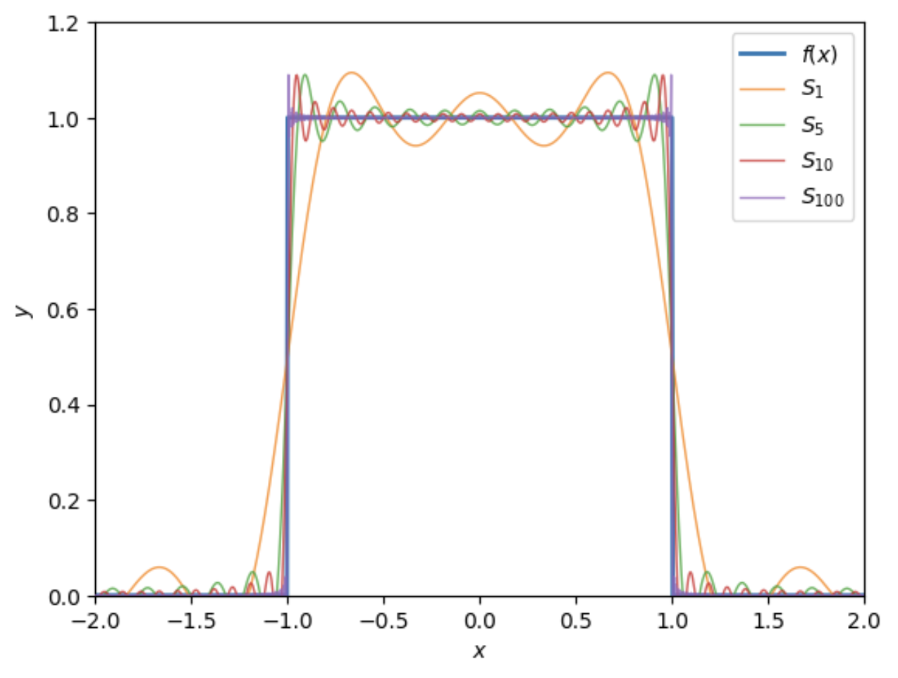
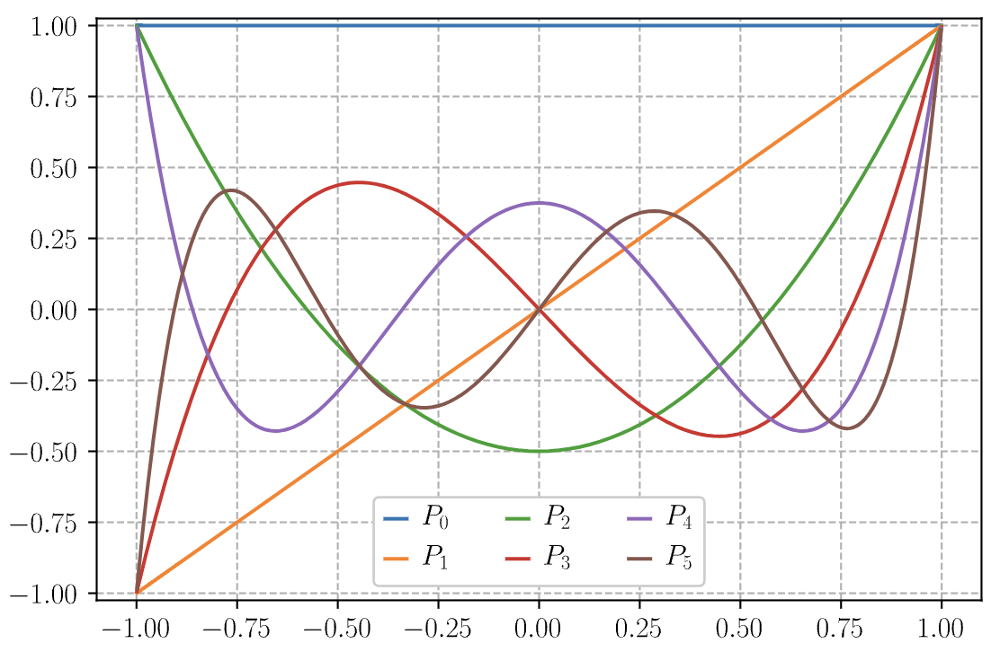
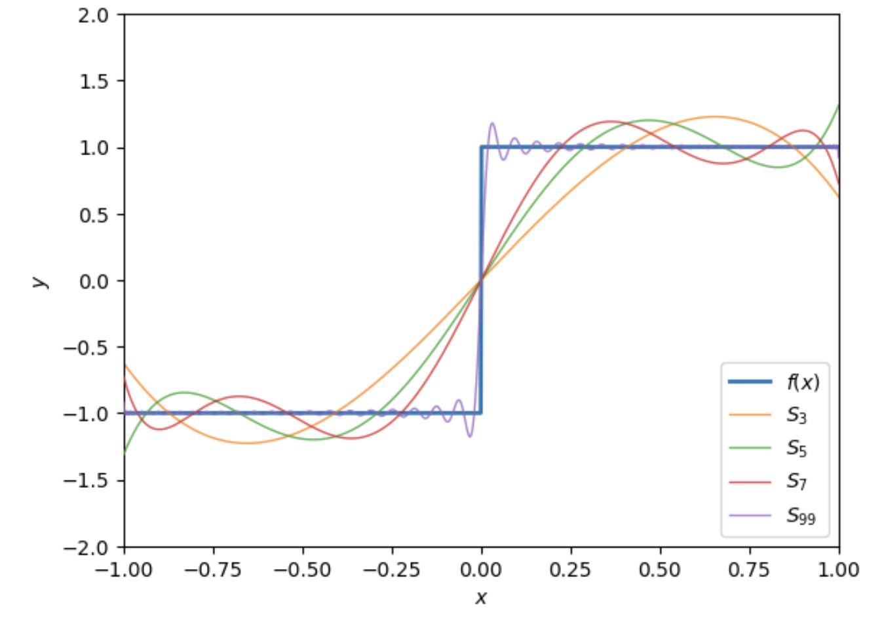
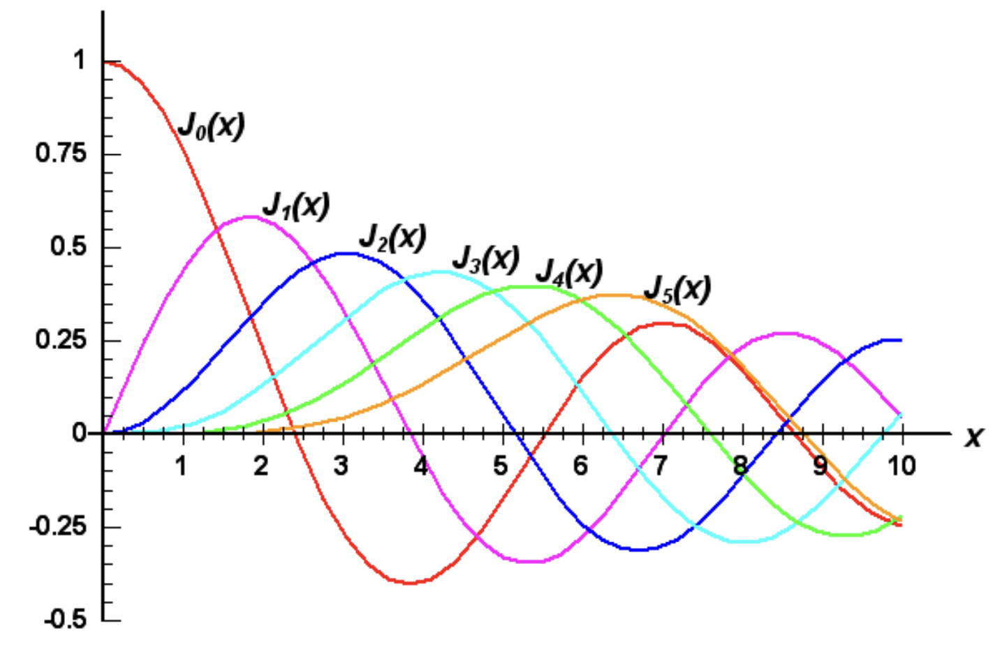
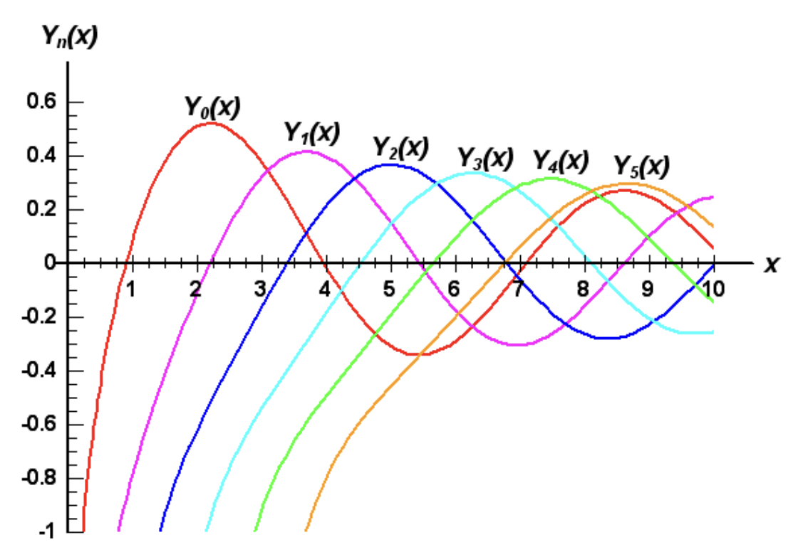

Appendix I: Orthogonal Functions
In this appendix, we’ll cover the basic theory of orthogonal functions. This theory underlies many of the topics we cover in electromagnetism, especially the theory of linear partial differential equations. We will cover concepts such as inner products of functions, orthogonality, completeness, and Sturm-Liouville theory, before finally introducing the most important classes of orthogonal functions we’ll encounter in this course.
Orthogonal Functions
We’ll begin our discussion of orthogonal functions by defining what we mean when we say a function is orthogonal. This will involve defining and discussing the inner product of functions, which is a direct generalization of the dot product from linear algebra. We’ll see that the theory of orthogonal functions indeed shares much in common with linear algebra, and can in a sense be thought of as a continuous limit of that subject.
Inner Products
Suppose \(f\) and \(g\) are two potentially complex-valued functions defined on some interval \(a \leq x \leq b\). We will assume both of these functions are square integrable on the given interval, meaning \[ \int_a^b dx \ |f(x)|^2 < \infty \ . \] If this is the case, we can define an inner product between the two functions on this interval by the integral \[ \langle f | g \rangle \equiv \int_a^b dx \ f^*(x) g(x) \ . \] Here \(f^*(x)\) denotes the complex conjugate of \(f(x)\). The range of the integration can be between any two points, or even the whole real line, so long as we’re consistent. Notice how similar this definition looks to the inner product of two vectors, apart from the notation. If we have two complex-valued vectors \(\mathbf{v}\) and \(\mathbf{w}\), their inner product is given by \[ \mathbf{v} \cdot \mathbf{w} = \sum_n v_n^* w_n \ , \] hence the inner product of functions is essentially the continuous analogue of the inner product of vectors. Like the inner product of vectors, the inner product of functions is linear in each of its arguments and its output will always be a complex number.
As with vectors, we’ll say two functions \(f\) and \(g\) are orthogonal if their inner product is zero, \[ \langle f | g \rangle = \int_a^b dx \ f^*(x) g(x) = 0 \ . \] Similarly, we can define a norm of a function \(f\) as being the square root of its self inner product, \[ ||f|| \equiv \sqrt{\langle f | f \rangle} = \sqrt{\int_a^b dx \ |f(x)|^2} \ . \] Notice that for this to make sense the self inner product \(\langle f | f \rangle\) should always be a non-negative real number. We can see from the integrand that this will indeed always be the case, since \(|f(x)|^2\) will always be a non-negative real number as well. As with vectors, we say that a nonzero function is normalized or unit length if its norm is one, i.e. \(||f|| = 1\).
From linear algebra, we also know that if we have an orthogonal set of vectors \(\mathbf{e}_n\) that span the vector space, then those vectors form a basis for that space, and we can represent any vector in the space as a linear superposition of those basis vectors, with \[ \mathbf{v} = \sum_n c_n \mathbf{e}_n \ . \] To find the coefficients \(c_n\) we need only dot \(\mathbf{v}\) with any basis vector, say \(\mathbf{e}_m \cdot \mathbf{v} = c_m |\mathbf{e}_m|^2\). This means the \(c_n\) are given by \[ c_n = \frac{\mathbf{e}_n \cdot \mathbf{v}}{|\mathbf{e}_n|^2} \ . \] These ideas extend to functions as well. We say a set of functions \(f_n(x)\) forms an orthogonal set provided each pair of functions is mutually orthogonal, i.e. \(\langle f_m | f_n \rangle = 0\) whenever \(m \neq n\). If furthermore each of the functions \(f_n(x)\) is normalized, we say the set of functions forms an orthonormal set. An orthonormal set of functions satisfies the nice property that \[ \langle f_m | f_n \rangle = \delta_{mn} \ , \] where \(\delta_{mn}\) is the usual Kronecker delta. If the set is orthogonal but not orthonormal, we have to modify this expression slightly by factoring out the norm of each function, giving instead \[ \langle f_m | f_n \rangle = ||f_m|| \ ||f_n|| \ \delta_{mn} \ . \]
Orthogonal Expansions
Now, we’d like to get to the idea of a basis of functions, but we have to be more careful by what we mean when we say any function can be expanded as a linear superposition of basis functions. We’d like to write something like \[ f(x) = \sum_n c_n f_n(x) \ . \] But for this equality to hold like we want, we have to reinterpret what we mean by the word equals. It will not in general be true that the two sides equal pointwise, in the sense that the equality holds for any value of \(x\) we plug into the formula. Instead, when we write an equals sign like this, we really mean that the two expressions are equal in norm, meaning the norm of their difference goes to zero as \(n\) becomes infinite, \[ \bigg|\bigg| f(x) - \sum_n c_n f_n(x) \bigg|\bigg| \rightarrow 0 \quad \text{as} \quad n \rightarrow \infty \ . \] If two functions are equal in norm, they won’t always be equal at every point \(x\), but they will be equal at almost all \(x\). This is a minor mathematical point that we mostly gloss over in physics, but it does lead to some interesting phenomena, e.g. the Gibbs phenomenon that arises in the Fourier series expansion of rectangular functions.
We say a set of functions \(f_n(x)\) is a complete set provided we can represent any function \(f(x)\) on the given interval as a linear superposition of these functions, in the equals in norm sense defined above, \[ f(x) = \sum_n c_n f_n(x) \ . \] If the complete set is also orthogonal, we call this an orthogonal expansion of \(f(x)\) in the basis of functions \(f_n(x)\). In this case, we can easily determine the expansion coefficients \(c_n\) by taking the inner product of both sides with respect to some \(f_m\), \[ \langle f_m | f \rangle = \sum_n c_n \langle f_m | f_n \rangle = c_m ||f_m||^2 \ , \] which implies the expansion coefficients are given by \[ c_n = \frac{\langle f_n | f \rangle}{||f_n||^2} = \frac{1}{||f_n||^2} \int_a^b dx \ f_n^*(x) f(x) \ . \] This method of obtaining the expansion coefficients is sometimes called the Fourier trick. We’ll use it a good bit in this course.
Now, observe if we plug this expressions back into the orthogonal expansion for \(f(x)\), we get \[ \begin{align*} f(x) &= \sum_n c_n f_n(x) \\ &= \sum_n \bigg(\frac{1}{||f_n||^2}\int_a^b dx' \ f_n^*(x') f(x')\bigg) f_n(x) \\ &= \int_a^b dx' \ \bigg(\frac{1}{||f_n||^2}\sum_n f_n^*(x') f_n(x)\bigg) f(x') \ . \end{align*} \] Evidently, this expression can only be true provided \[ \frac{1}{||f_n||^2} \sum_n f_n^*(x') f_n(x) = \delta(x-x') \ . \] This relation is called the completeness relation. It’s a necessary condition for the set of \(f_n(x)\) to form a complete set. This gives us a relatively simple way to check whether a given an orthogonal set of functions is complete or not. Provided the completeness condition holds, we know we can write down an orthogonal expansion in terms of those basis functions.
Last, we’ll derive one more useful result known as Parseval’s Identity. Suppose we’ve expanded \(f(x)\) in terms of an orthogonal set \(f_n(x)\). If we consider the squared norm \(||f||^2 = \langle f | f \rangle\) and expand \(f(x)\) out on both sides and plug in the formula for the coefficients, we have \[ \begin{align*} ||f||^2 &= \bigg\langle \sum_{n'} c_{n'} f_{n'} \bigg| \sum_n c_n f_n \bigg\rangle \\ &= \sum_{n,n'} c_{n'}^* c_n \langle f_{n'} | f_n \rangle \\ &= \sum_{n,n'} c_{n'}^* c_n ||f_{n'}|| \ ||f_n|| \ \delta_{nn'} \\ &= \sum_n |c_n|^2 ||f_n||^2 \ . \end{align*} \] That is, the squared function norm of \(f(x)\) is equal to the squared vector norm of the coefficients \(c_n\), weighted by \(f_n\). If the set is orthonormal then the weights disappear, and we can simply write \(||f||^2 = |\mathbf{c}|^2\), where \(\mathbf{c}\) is an infinite vector of coefficients. One immediate implication of this identity is that if \(f(x)\) is square-integrable, then the coefficients must decay to zero as \(n \rightarrow \infty\).
Sturm-Liouville Theory
For a large class of problems we don’t need to go through the hard work of figuring out whether a set of functions is complete or orthogonal. These are so-called Sturm-Liouville problems. Provided we can prove that a set of functions satisfies a Sturm-Liouville problem, we automatically know that it will form a complete orthogonal set of functions, which saves us the hard work of having to verify each of these properties independently.
Hermitian Operators
Suppose we have some linear differential operator \(\mathcal{L}\) satisfying a differential equation \[ \mathcal{L} f = \lambda f \ . \] We call this an eigenvalue problem. Any function that satisfies the differential equation is called an eigenfunction with associated eigenvalue \(\lambda\). Indeed, this is just a continuous generalization of the eigenvalue problem \(\mathbf{A}\mathbf{x} = \lambda\mathbf{x}\) from linear algebra, with the vector \(\mathbf{x}\) replaced by a function \(f(x)\) and the matrix \(\mathbf{A}\) replaced by a linear operator \(\mathcal{L}\).
If we restrict the class of functions to those that are square-normalizable on some interval \(a \leq x \leq b\), we can define an inner product on them in the usual way by \[ \langle f | g \rangle \equiv \int_a^b dx \ f^*(x) w(x) g(x) \ . \] Notice we’ve introduced an optional positive-valued weighting function \(w(x) > 0\) in the inner product, which will be useful below.
The most useful types of differential operators in physics are the Hermitian or self-adjoint operators, which are operators satisfying the self-adjoint relation \[ \langle \mathcal{L} f | g \rangle = \langle f | \mathcal{L}g \rangle \ . \] If we think of \(\mathcal{L}\) as a type of matrix, it’s easy to see that this is equivalent to requiring that the \(\mathcal{L}\) be Hermitian, i.e. \(\mathcal{L}^\dagger = \mathcal{L}\), where \(\mathcal{L}^\dagger\) is the conjugate transpose of \(\mathcal{L}\). This is where the term Hermitian operator comes from.
As an example, suppose \(\mathcal{L}\) is the second derivative operator \(\mathcal{L} = \frac{d^2}{dx^2}\) and we take \(w(x)=1\). If we plug this into the inner product and integrate by parts twice, we get \[ \begin{align*} \langle \mathcal{L} f | g \rangle &= \int_a^b dx \ \frac{d^2f^*}{dx^2} g(x) \\ &= \frac{d}{dx} f^*(x) \frac{d}{dx}g(x) \bigg|_{x=a}^{x=b} - \int_a^b dx \ \frac{df^*}{dx} \frac{dg}{dx} \\ &= g(x) \frac{d}{dx} f^*(x) \bigg|_{x=a}^{x=b} - f^*(x) \frac{d}{dx}g(x) \bigg|_{x=a}^{x=b} + \int_a^b dx \ f^*(x) \frac{dg}{dx} \ . \end{align*} \] Provided either of these functions or their first derivatives vanish at the endpoints \(x=a\) and \(x=b\), we can satisfy the self-adjoint condition \(\langle \mathcal{L} f | g \rangle = \langle f | \mathcal{L} g \rangle\). That is, the second derivative operator is Hermitian when applied to functions with Dirichlet, Neumann, or indeed mixed boundary conditions.
One can easily check the following two facts about Hermitian operators:
- Any operator of the form \(\mathcal{L} = g(x)\) where \(g(x)\) is a real-valued function will be Hermitian.
- Any linear superposition of Hermitian operators will be Hermitian as well.
So why are Hermitian operators so important? It turns out that any Hermitian operator satisfies these two conditions:
The eigenvalues \(\lambda_n\) of a Hermitian operator will always be real-valued.
The eigenfunctions \(f_n\) corresponding to distinct eigenvalues with always be orthogonal.
Both of these are easy to check from the definition. To check the first statement, we pick an nonzero eigenfunction \(f_n(x)\) and notice that since \(\mathcal{L}\) is Hermitian and \(\mathcal{L} f_n = \lambda_n f_n\) we must have \[ \langle \mathcal{L} f_n | f_n \rangle = \lambda_n^* \langle f_n | f_n \rangle = \langle f_n | \mathcal{L} f_n \rangle = \lambda_n \langle f_n | f_n \rangle \quad \Longrightarrow \quad (\lambda_n^* - \lambda_n) \langle f_n | f_n \rangle = 0 \ . \] The only way this can be true is if \(f_n = 0\) or \(\lambda_n = \lambda_n^*\). Since \(f_n = 0\) is disallowed, the eigenvalue \(\lambda_n\) must be real. To check the second statement, we pick two eigenfunctions \(f_m(x)\) and \(f_n(x)\) with distinct eigenvalues \(\lambda_n \neq \lambda_m\) and do the same thing, \[ \langle \mathcal{L} f_m | f_n \rangle = \lambda_m \langle f_m | f_n \rangle = \langle f_m | \mathcal{L} f_n \rangle = \lambda_n \langle f_m | f_n \rangle \quad \Longrightarrow \quad (\lambda_m - \lambda_n) \langle f_m | f_n \rangle = 0 \ . \] Since \(\lambda_m \neq \lambda_n\) by assumption, the only way this can be true is if \(\langle f_m | f_n \rangle = 0\), meaning \(f_m(x)\) and \(f_n(x)\) are orthogonal.
Sturm-Liouville Problems
With this theory in hand, let’s now focus specifically the Sturm-Liouville problem. A Sturm-Liouville problem is any boundary value problem of the form \[ \begin{align*} \begin{cases} -\frac{d}{dx} \big[p(x) \frac{df}{dx}\big] + q(x) f(x) = \lambda w(x) f(x) \ , \\ \text{where} \ \alpha_1 f(a) + \alpha_2 \frac{d}{dx} f(a) = 0 \ , \quad \alpha_1 \neq 0 \ \text{or} \ \beta_1 \neq 0 \ , \\ \text{and} \quad \beta_1 f(b) + \beta_2 \frac{d}{dx} f(b) = 0 \ , \quad \ \ \alpha_2 \neq 0 \ \text{or} \ \beta_2 \neq 0 \ . \end{cases} \end{align*} \] We require that \(p(x), q(x), w(x)\) all be real-valued continuous functions with \(p(x),w(x) > 0\). By expressing the boundary conditions this way, we’re just saying in a fancy way that the boundary conditions must be of type Dirichlet, Neumann, or mixed. We can recover the Dirichlet conditions by setting \(\beta_1 = \beta_2 = 0\), and the Neumann conditions by setting \(\alpha_1 = \alpha_2 = 0\).
Now let’s look closer at the differential equation itself. If we expand things out, we get \[ p(x) \frac{d^2f}{dx^2} + \frac{dp}{dx} \frac{df}{dx} + \big(q(x) - \lambda w(x)\big) f(x) = 0 \ . \] Notice this is just the general form for any linear second order homogeneous ODE. Thus, in some sense the Sturm-Liouville problem covers every linear second order ODE subject to the right boundary conditions.
Though perhaps not obvious, the Sturm-Liouville problem is Hermitian. We can see this by defining an operator of the form \[ \mathcal{L}f \equiv \frac{1}{w(x)} \bigg[-\frac{d}{dx} \bigg(p(x) \frac{df}{dx}\bigg) + q(x) f\bigg] \ . \] Since the second term is a function operator we know it will be Hermitian. We also know that the sum of Hermitian operators is Hermitian. This means it suffices for our purposes to check that the operator \(\mathcal{L} - \frac{q(x)}{w(x)}\) is Hermitian, meaning it satisfies the self-adjoint condition \(\langle (\mathcal{L}-\frac{q}{w}) f | g \rangle = \langle f | (\mathcal{L}-\frac{q}{w}) g \rangle\). To do that we integrate by parts twice again to get \[ \begin{align*} \big\langle \big(\mathcal{L}-\frac{q}{w}\big) f \big| g \big\rangle &= -\int_a^b dx \ \frac{d}{dx} \bigg(p(x) \frac{d}{dx}f^*(x)\bigg) g(x) \\ &= -p(x)g(x) \frac{d}{dx}f^*(x) \bigg|_{x=a}^{x=b} + \int_a^b dx \ \bigg(p(x) \frac{d}{dx}f^*(x)\bigg) \frac{d}{dx}g(x) \\ &= \bigg[p(x)f^*(x) \frac{d}{dx}g(x) - p(x)g(x) \frac{d}{dx}f^*(x)\bigg]_{x=a}^{x=b} - \int_a^b dx \ f^*(x) \frac{d}{dx} \bigg(p(x) \frac{d}{dx}g(x)\bigg) \\ &= \bigg[p(x)f^*(x) \frac{d}{dx}g(x) - p(x)g(x) \frac{d}{dx}f^*(x)\bigg]_{x=a}^{x=b} + \big\langle f \big| \big(\mathcal{L}-\frac{q}{w}\big) g \big\rangle \ . \end{align*} \] It’s not hard to show that the Sturm-Liouville boundary conditions now require that both boundary terms vanish. In fact, we don’t even need the boundary conditions to be satisfied. Notice that the boundary terms will also vanish if \(p(x)\) happens to vanish on the endpoints. If that’s the case, we only require that the functions and their derivatives be finite at the endpoints. This may seem academic, but we’ll see this is exactly what happens with the Legendre polynomials in the next section.
At any rate, provided the boundary terms vanish, we’re left with \[ \big\langle \big(\mathcal{L}-\frac{q}{w}\big) f \big| g \big\rangle = \big\langle f \big| \big(\mathcal{L}-\frac{q}{w}\big) g \big\rangle \ . \] Thus, the Sturm-Liouville operator \(\mathcal{L}\) must be Hermitian. An immediately consequence of this is that we know that the eigenvalues of \(\mathcal{L}\) are real-valued, and eigenfunctions with different eigenvalues must be orthogonal.
We can actually say something stronger about the eigenvalues and eigenfunctions of the Sturm-Liouville problem. The proof is a bit technical so we’ll just state the result: For any Sturm-Liouville problem the following facts must be true:
- There will be infinitely many eigenvalues and eigenfunctions.
- The eigenvalues will always be distinct, and can be linearly ordered such that \(\lambda_1 < \lambda_2 < \cdots < \lambda_n < \cdots \rightarrow \infty\).
- Corresponding to each eigenvalue \(\lambda_n\) is a unique function \(f_n(x)\) satisfying the Sturm-Liouville problem.
- The eigenfunctions form a complete orthogonal set of functions on \(a \leq x \leq b\) that can be made orthonormal.
The last condition is probably the most useful for our purposes. It says that for any function \(f(x)\) satisfying the boundary conditions of a Sturm-Liouville problem, we can do an orthogonal expansion of \(f(x)\) in terms of the eigenfunctions \(f_n(x)\) as \[ f(x) = \sum_{n=1}^\infty c_n f_n(x) \ , \] where the coefficients are given in the usual way by \(||f_n||^2 c_n = \langle f_n | f_m \rangle\). This is a remarkable result. It means that to find a set of complete orthogonal functions on some interval, all we need to do is show that it satisfies some type of Sturm-Liouville problem. If it does, the orthogonal expansion is just given by the eigenfunctions of that problem.
We’ll see a few important example of this in the following sections, where we’ll cover some of the most important classes of orthogonal functions we see in electromagnetism, the so-called special functions.
Fourier Series
First, we’ll look at perhaps the most important class of functions in physics, the complex exponentials. The complex exponentials won’t in general be orthogonal to each other, but we can make them orthogonal by choosing the right constants. Suppose \[ f_n(x) = a_n e^{i k_n x} \ \] is defined on some closed interval \(-L \leq x \leq L\) of length \(2L\). We’ll show that for certain choices of \(a_n\) and \(k_n\) this set of functions forms a complete orthonormal set on the above interval. We’ll do that by finding a Sturm Liouville problem whose eigenfunctions are these complex exponentials.
Consider the following boundary value problem, \[ \begin{align*} \begin{cases} \frac{d^2f}{d^2x} = \lambda f \ , \\ \text{where} \ f(-L) = \frac{d}{dx} f(L) = 0 \ . \end{cases} \end{align*} \] This is a clearly a Sturm-Liouville problem, with \(p(x) = 1\), \(q(x) = 0\), \(w(x) = 1\), \(\alpha_1 = \beta_2 = 1\), and \(\alpha_2 = \beta_1 = 0\).
To solve this problem we recognize that it’s just a simple harmonic oscillator with \(\lambda = -k^2\). The general solution can be written \[ f(x) = a e^{i kx} + b e^{-i kx} \ . \] Plugging in the boundary conditions evidently gives \[ \begin{align*} 0 &= a e^{-ikL} + b e^{ikL} \ ,\\ 0 &= ik \big(a e^{ikL} - b e^{-ikL}\big) \ . \end{align*} \] The only way these conditions can both be true is if \(kL\) is an integer multiple of \(\pi\). That is, if \[ k_n = \frac{n\pi}{L} \quad , \quad n = 0, \pm 1, \pm 2, \cdots \ . \] We’ve thus found an infinite set of solutions that satisfy a Sturm-Liouville problem, given by \[ f_n(x) = a_n e^{in\pi x/L} \quad , \quad n = 0, \pm 1, \pm 2, \cdots \ . \] Let’s go ahead and normalize them as well so we get a complete orthonormal set of functions. We do that by requiring that \(\langle f_n | f_n \rangle = 1\). Taking this inner product and requiring it equal one, we have \[ \langle f_n | f_n \rangle = \int_{-L}^L dx \ a_n^* e^{-i k_n x} a_n e^{i k_n x} = 2L |a_n|^2 \quad \Longrightarrow \quad a_n = \frac{1}{\sqrt{2L}} \ . \] According to Sturm Liouville theory, we’ve thus found a complete orthonormal set on the interval \(-L \leq x \leq L\) given by the infinite set of functions \[ f_n(x) = \frac{1}{\sqrt{2L}} e^{in\pi x/L} \quad , \quad n = 0, \pm 1, \pm 2, \cdots \ . \] ### Complex Fourier Series
This means we can do an orthogonal expansion any function \(f(x)\) on this interval and write \[ f(x) = \frac{1}{\sqrt{2L}} \sum_{n=-\infty}^\infty c_n e^{in\pi x/L} \ . \] This important series expansion is known as a Fourier series. It’s arguably the most important series in science and engineering. It’s conventional with Fourier series to absorb the normalization constant into the coefficients \(c_n\) and instead write \[ \boxed{ f(x) = \sum_{n=-\infty}^\infty c_n e^{in\pi x/L} } \ . \] Note that, strictly speaking, Sturm-Liouville only guarantees that any functions \(f(x)\) that satisfy the boundary conditions of the Sturm-Liouville problem are guaranteed to have an orthogonal expansion. However, further results from the theory of Fourier analysis show that any function on this interval can be expanded this way, not just ones satisfying the boundary conditions.
The coefficients \(c_n\) are given in the usual way, except we have to account for the absorption of \(\frac{1}{2\sqrt{L}}\) into the \(c_n\). With this, we must have \(c_n = \frac{1}{\sqrt{2L}} \langle f_n | f \rangle\), which gives \[ \boxed{ c_n = \frac{1}{2L} \int_{-L}^L dx \ f(x) e^{-in\pi x/L} } \ . \] Notice that the set of basis functions \(f_n(x)\) are all periodic on the real line with period \(2L\), i.e. \(f_n(x) = f_n(x + 2L)\). This means we can also think of the Fourier series as a periodic expansion over the real line. An implication of this is that any \(2L\)-periodic function \(f(x)\) can be expanded into a Fourier series.
Real Fourier Series
It’s common to rewrite the Fourier series in a different form by making the basis functions real-valued. To achieve this, we’ll first rewrite the series in a slightly different from by grouping terms and restricting \(n\) to be non-negative, \[ f(x) = c_0 + \sum_{n=1}^\infty \big[c_n e^{in\pi x/L} + c_{-n} e^{-in\pi x/L}\big] \ . \] We can now use the Euler identity to write each complex exponential into sines and cosines, and regroup terms to get \[ \begin{align*} f(x) &= c_0 + \sum_{n=1}^\infty \bigg[c_n e^{in\pi x/L} + c_{-n} e^{-in\pi x/L}\bigg] \\ &= c_0 + \sum_{n=1}^\infty \bigg[c_n \bigg(\cos \frac{n\pi x}{L} + i \sin \frac{n\pi x}{L}\bigg) + c_{-n} \bigg(\cos \frac{n\pi x}{L} - i \sin \frac{n\pi x}{L}\bigg)\bigg] \\ &= c_0 + \sum_{n=1}^\infty \bigg[(c_n + c_{-n}) \cos \frac{n\pi x}{L} + i (c_n - c_{-n}) \sin \frac{n\pi x}{L}\bigg] \ . \end{align*} \] Now, we’ll define new expansion coefficients \(a_n\) and \(b_n\) in terms of \(c_n\) by \[ a_n \equiv c_n + c_{-n} \quad , \quad b_n \equiv i(c_n - c_{-n}) \ . \] Plugging this back into the Fourier series, we get \[ \boxed{ f(x) = \frac{a_0}{2} + \sum_{n=1}^\infty \bigg[a_n \cos \frac{n\pi x}{L} + b_n \sin \frac{n\pi x}{L}\bigg] } \ . \] The expansion coefficients can then be found by plugging in the formulas for \(c_n\) and \(c_{-n}\) and grouping terms to get \[ \boxed{ \begin{align*} a_0 &= \frac{1}{L} \int_{-L}^L dx \ f(x) \\ a_n &= \frac{1}{L} \int_{-L}^L dx \ f(x) \cos \frac{n\pi x}{L} \\ b_n &= \frac{1}{L} \int_{-L}^L dx \ f(x) \sin \frac{n\pi x}{L} \end{align*} } \ . \] Though perhaps not immediately obvious, this set of sines and cosines also forms an orthogonal expansion. Indeed, if we define \[ C_n(x) \equiv \frac{1}{\sqrt{L}} \cos \frac{n\pi x}{L} \quad , \quad S_n(x) \equiv \frac{1}{\sqrt{L}} \sin \frac{n\pi x}{L} \ , \] then each set of functions forms an orthonormal set, with \(\langle C_m | C_n \rangle = \langle S_m | S_n \rangle = \delta_{mn}\), and the functions in each set are always orthogonal to each other, with \(\langle C_m | S_n \rangle = 0\). These facts can easily be shown by writing \(C_n\) and \(S_n\) in terms of \(f_n\) and plugging those expressions into the inner product and simplifying terms, with no integration needed.
Let’s work a brief example to show how to actually find the Fourier series for some simple function.
Example: Fourier series of a rectangular pulse
Suppose we have a function \(f(x)\) representing a rectangular pulse of height \(h\) on the interval \(-L \leq x \leq L\), with \[ f(x) = \begin{cases} 0 , & -L \leq x \leq -\frac{L}{2} \ , \\ h , & -\frac{L}{2} < x < \frac{L}{2} \ , \\ 0 , & \frac{L}{2} \leq x \leq L \ . \end{cases} \] We’d like to expand this function as a Fourier series. To do that, we need to find the coefficients \(c_n\). According to the formula above, we have \[ \begin{align*} c_n &= \frac{1}{2L} \int_{-L}^L dx \ f(x) e^{-in\pi x/L} \\ &= \frac{1}{2L} \int_{-\frac{L}{2}}^{\frac{L}{2}} dx \ h e^{-in\pi x/L} \\ &= \frac{h}{2L} \frac{2L}{n\pi} \frac{1}{2i} \bigg[\exp\bigg(\frac{in\pi}{L}\frac{L}{2}\bigg) - \exp\bigg(-\frac{in\pi}{L}\frac{L}{2}\bigg)\bigg] \\ &= \frac{h}{n\pi} \sin \frac{n\pi}{2} \\ &= \begin{cases} \frac{h}{n\pi} & n=\pm 1, \pm 5, \pm 9, \cdots \\ -\frac{h}{n\pi} & n=\pm 3, \pm 7, \pm 11, \cdots \\ 0 & n=\pm 2, \pm 4, \pm 6, \cdots \end{cases} \ . \end{align*} \] The case when \(n=0\) we have to check separately. In that case, the integral is just \(\frac{1}{2L}\) times the area of the pulse, which is \(hL\). This gives \(c_0 = \frac{h}{2}\). Now, could proceed to plug these coefficients into the complex Fourier series, but in this case it’s more useful to work with the real Fourier series as we’ll see. Using the conversion formulas between \(c_n\) and \(a_n, b_n\) we have \[ a_0 = h \quad , \quad a_n = \pm \frac{2h}{n\pi} \quad , \quad b_n = 0 \ . \] Using these coefficients, we can express the series in closed form by letting \(n=2k+1\) to get \[ f(x) = \frac{h}{2} + \sum_{k=0}^\infty \frac{(-1)^k}{2k+1} \cos \frac{(2k+1) \pi x}{L} = \frac{h}{2} + \frac{2h}{\pi} \bigg[\cos \frac{\pi x}{L} - \frac{1}{3}\cos \frac{3\pi x}{L} + \frac{1}{5}\cos \frac{5\pi x}{L} - \frac{1}{7}\cos \frac{7\pi x}{L} + \cdots \bigg] \ . \] Notice that each term in the series decays as \(\frac{1}{n}\). This means we can approximate this series by keeping only the first few terms, and the approximation gets better and better the more terms we include.
Below we show a plot \(f(x)\) where \(h=1\) and \(L=2\) along with its Fourier approximations \(S_N\) for \(N=1, 5, 10, 100\). Notice that as we keep more terms, the series better and better approximates the behavior of \(f(x)\), which is what we’d expect.

Notice something curious from this plot. Around the discontinuous points at \(x = \pm \frac{L}{2}\) the series never seems to converge at those two points. In fact, the series approximations seem to have a spike around \(y \approx 1.09h\) near \(x = \pm \frac{L}{2}\), or about \(9\%\) of the gap. In fact, these spikes persists no matter how high we take \(N\) to be in the series approximation. It’s known as the Gibb’s phenomenon, and can be proven analytically.
This behavior around discontinuities is a general fact about Fourier series. They will only converge at points where the function is actually continuous. At discontinuous points the series will converge to the average value of the left and right limits, and will always have this Gibbs phenomenon type behavior nearby.
Anyway, had we been smarter, we’d notice something that could’ve greatly simplified this problem: The pulse function \(f(x)\) is even. If we stare at the Fourier series, we see that only the cosine terms are even, while the sine terms are all odd. This means the only way we could expand an even function is if we require all the odd coefficients to vanish, leaving us with \[ f(x) = \frac{a_0}{2} + \sum_{n=1}^\infty a_n \cos \frac{n\pi x}{L} \ . \] This is called a cosine series. Any even function can be expanded this way. Had we recognized this, we could’ve just calculated \(a_0\) and \(a_n\) and we’d be done. A similar fact is true for odd functions. In that case, all the even coefficients must vanish, leaving us with a sine series instead.
Fourier Transform
It turns out that the Fourier series also has a continuous analogue to it known as the Fourier transform. The Fourier transform can be thought of the continuous analogue of the Fourier series as we let the interval length \(L \rightarrow \infty\). When a well-behaved function \(f(x)\) is defined on the entire real line we can take its Fourier transform. As innocuous as this all sounds, the Fourier transform is without a doubt one of the most important mathematical operations in all of science in engineering. It can be used to analyze signals, create filters, and even solve complex differential equations.
Definition
We can derive the Fourier transform from Fourier series pretty easily. To do that, we suppose \(f(x)\) can be expressed by a complex Fourier series of the form \[ f(x) = \sum_{n=-\infty}^\infty c_n e^{ik_nx} \ , \] where \(k_n \equiv = \frac{n\pi}{L}\) and the coefficients \(c_n\) are given by the integral \[ c_n = \frac{1}{2L} \int_{-L}^L dx \ f(x) e^{-i k_n x} \ . \] Substituting this expression into the Fourier series, we get the completeness relation \[ f(x) = \sum_{n=-\infty}^\infty \bigg(\frac{1}{2L} \int_{-L}^L dx' \ f(x') e^{-i k_n x'}\bigg) e^{ik_nx} \ . \] Now, suppose \(L \gg 1\). Then the difference between successive \(k_n\) becomes infinitesimal, with each \(\Delta k_n = \frac{\pi}{L}\). This means we can approximate the sum over \(n\) by an integral over \(k \equiv k_n = \frac{n\pi}{L}\) with \[ \sum_{n=-\infty}^\infty \approx \frac{L}{\pi} \int_0^\infty dk \ . \] This means the completeness relation becomes \[ f(x) \approx \int_0^\infty \frac{dk}{2\pi} \ \bigg(\int_{-L}^L dx' \ f(x') e^{-i k x'}\bigg) e^{ikx} \ . \] Now, the inside integral is some function of \(k\). We’ll abuse notation and call this function \(f(k)\). Letting \(L \rightarrow \infty\), this inside integral evidently becomes \[ \boxed{ f(k) = \int_{-\infty}^\infty dx \ f(x) e^{-i k x} } \ . \] This function \(f(k)\) is called the Fourier transform of \(f(x)\). It’s common to denote the operator that transforms \(f(x)\) into \(f(k)\) by \(\mathcal{F}\), and also write \(f(k) = \mathcal{F}[f(x)](k)\) as a shorthand for the integral defined above.
The function \(f(k)\) is defined on the whole real line, but in a different space, known as \(k\)-space or frequency space. From dimensional analysis, it’s easy to see that \(k\) must have dimensions of \(\frac{1}{x}\), which has units of angular frequency if \(x\) is time, and wavenumber if \(x\) is position. In this sense, the Fourier transform is an integral transform that converts a function of time into a function of frequency, or a function of position into a function of wavenumber.
If we plug \(f(k)\) back into the completeness relation, we get another integral that converts \(f(k)\) back into \(f(x)\), \[ \boxed{ f(x) = \int_0^\infty \frac{dk}{2\pi} \ f(k) e^{ikx} }\ . \] This function is known as the inverse Fourier transform. This transform can be thought of as the inverse operator to the Fourier transform operator \(\mathcal{F}\). We thus denote it by \(\mathcal{F}^{-1}\), and write \(f(x) = \mathcal{F}^{-1}[f(k)](x)\). The inverse Fourier transform takes a function defined in \(k\)-space, and converts it back into a function in ordinary space. That is, it converts a function of frequency back into a function of time, or a function of wavenumber back into a function of position.
Orthogonality
The complex integrals \(e^{ikx}\) are still orthogonal in the continuum limit, except in a slightly different sense. We can define a set of basis functions \(f_k(x)\) by \[ f_k(x) \equiv \frac{1}{2\pi} e^{ikx} \ . \] Notice that this set of functions is now indexed by a continuous parameter \(k\) instead of a discrete number \(n\). If we take \(L \rightarrow \infty\) and consider the inner product \(\langle f_{k'} | f_k \rangle\), we evidently have \[ \langle f_{k'} | f_k \rangle = \int_{-\infty}^\infty dx \ f_k^*(x) f_{k'}(x) = \frac{1}{2\pi} \int_{-\infty}^\infty \frac{dx}{2\pi} \ e^{i(k-k')x} = \frac{1}{2\pi} \delta(k-k') \ . \] When \(k \neq k'\) we see that \(\langle f_{k'} | f_k \rangle = 0\), which means \(f_{k'}(x)\) and \(f_k(x)\) are orthogonal. But when \(k=k'\) we have something new. Instead of the inner product being some number, it’s now infinite. Nevertheless, we can think of this as defining an orthogonality relation for a continuous set of basis functions, with Kronecker deltas \(\delta_{nn'}\) replaced by Dirac deltas \(\delta(k-k')\).
If we ignore the delta function though, we can see that the basis functions are no longer normalized, since \(\langle f_{k'} | f_k \rangle \sim \frac{1}{2\pi} \neq 1\). We could normalize them if we wanted to by redefining \(f_k(x) \equiv \frac{1}{\sqrt{2\pi}} e^{ikx}\), but then we’d end up with a slightly different definition of the Fourier transform. This normalized version of the Fourier transform is usually chosen in quantum mechanics, but rarely in electromagnetism or other fields of physics, so we won’t use it in this course.
Properties
The Fourier transform turns out to be a very powerful operation. Much of its utility comes from the properties it satisfies. Before listing these, it’s worth introducing the useful notation \(f(x) \leftrightarrow f(k)\) as a shorthand for the much more cumbersome notation \(\mathcal{F}[f(x)](k) = f(k)\). Think of the \(\leftrightarrow\) symbol as meaning “is the Fourier duel of”, in the sense that the relations on both sides are related by a Fourier transform.
From the definition, it’s easy to see that the Fourier transform satisfies the following properties:
- Linearity: \(af(x) + bg(x) \leftrightarrow af(k) + bg(k)\).
- Scaling: \(f(\alpha x) \leftrightarrow \frac{1}{|\alpha|} f\big(\frac{k}{\alpha}\big)\).
- Translation: \(f(x-x') \leftrightarrow e^{ikx'} f(k)\).
- Reversal: \(f(-x) \leftrightarrow f(-k)\).
- Complex Conjugation: \(f^*(x) \leftrightarrow f^*(k)\).
Example: Fourier transform of a Gaussian
Let’s briefly work an example to show how one can use these properties to calculate Fourier transforms. Consider the function \[ f(x) = \frac{1}{\sqrt{2\pi\sigma^2}} \exp\bigg[-\frac{1}{2\sigma^2} (x-\mu)^2\bigg] \ . \] This function describes the probability density function of a Gaussian distributed random variable with mean \(\mu\) and variance \(\sigma^2\).
Using the linearity, scaling, and translation properties of the Fourier transform together, we must have \[ f(k) = \frac{e^{ik\mu}}{\sqrt{2\pi\sigma^2}} \mathcal{F}\big[e^{-x^2/2\sigma^2}\big](k) = \frac{1}{\pi} e^{ik\mu} \mathcal{F}\big[e^{-x^2}\big](\sqrt{2}\sigma k) \ . \] All that remains then is to find the transform of \(g(x) \equiv e^{-x^2}\). We can do this by completing the square and integrating to get $$ \[\begin{align*} g(k) &= \int_{-\infty}^\infty dx \ g(x) e^{-ikx} \\ &= \int_{-\infty}^\infty dx \ e^{-x^2} e^{-ikx} \\ &= \int_{-\infty}^\infty dx \ e^{-(x-ik/2)^2} \\ &= \sqrt{\pi} e^{-k^2/4} \ . \end{align*}\] \[ Putting these results together, we finally have \] f(k) = e^{ik} e{-2 k^2/2} = e{-2/2^2} . $$ Thus, the Fourier transform of a Gaussian is evidently just another Gaussian, except with a complex mean \(\frac{i\mu}{\sigma^2}\) and a variance \(\frac{1}{\sigma^2}\) in \(k\)-space. This means that the more spread out \(f(x)\) is, the less spread out \(f(k)\) will be, and vice versa. This essentially follows from the scaling property of the Fourier transform, which sends a function \(f(\sigma x)\) to a function \(f(k/\sigma)\).
The class of Gaussian functions is unique in the sense that they’re the fixed points of the Fourier transform operator, meaning the Fourier transform of a Gaussian will always be another Gaussian. This fact is used in quantum mechanics for formalize the idea of a wave packet, which formalizes the sense in which particles and waves are related.
A few more important properties are worth mentioning as well, but these aren’t as easy to see. First, suppose we have some function \(h(x)\) that’s a convolution of two other functions \(f(x)\) and \(g(x)\), i.e. \[ h(x) = (f \ast g)(x) \equiv \int_{-\infty}^\infty dx' \ f(x') g(x-x') \ . \] If we take the Fourier transform of both sides, interchange integrals, and substitute \(u=x-x'\), we get \[ \begin{align*} h(k) &= \int_{-\infty}^\infty dx \bigg(\int_{-\infty}^\infty dx' \ f(x') g(x-x')\bigg) e^{-ikx} \\ &= \int_{-\infty}^\infty dx' \ f(x') \int_{-\infty}^\infty dx \ g(x-x') e^{-ikx} \\ &= \int_{-\infty}^\infty dx' \ f(x') e^{-ikx'} \int_{-\infty}^\infty du \ f(u) e^{-iku} \\ &= f(k) g(k) \ . \end{align*} \] We’ve thus shown that the Fourier transform converts convolutions in \(x\)-space to products in \(k\)-space, with \[ (f \ast g)(x) \leftrightarrow f(k) g(k) \ . \] By following the exact same argument starting with \(h(k) \equiv (f \ast g)(k)\) and taking its inverse Fourier transform, one can show that the Fourier transform converts products in \(x\)-space into convolutions in \(k\)-space, with \[ f(x) g(x) \leftrightarrow \frac{1}{2\pi} (f \ast g)(k) \ . \] The next non-trivial property of the Fourier transform is that it preserves the inner product of functions in a sense. Suppose \(f(x)\) and \(g(x)\) are two functions with an inner product \(\langle f | g \rangle_x\) in \(x\)-space and an inner product \(\langle f | g \rangle_k\) in \(k\)-space. Then \[ \langle f | g \rangle_x = \frac{1}{2\pi} \langle f | g \rangle_k \ . \] This result is known as Parseval’s Theorem. To prove this theorem, we start with the inner product \(\langle f | g \rangle_x\), take the inverse Fourier transform of \(f(x)\) and \(g(x)\), and then interchange the \(x\) and \(k\) integrals to get a delta function. We get \[ \begin{align*} \int_{-\infty}^\infty dx \ f^*(x) g(x) &= \int_{-\infty}^\infty dx \ \mathcal{F}^{-1}[f^*(k')](x) \cdot \mathcal{F}^{-1}[g(k)](x) \\ &= \int_{-\infty}^\infty dx \ \int_{-\infty}^\infty \frac{dk'}{2\pi} \ f^*(k') e^{-ik'x} \int_{-\infty}^\infty \frac{dk}{2\pi} \ g(k) e^{ikx} \\ &= \int_{-\infty}^\infty \frac{dk'}{2\pi} \ f^*(k') \int_{-\infty}^\infty \frac{dk}{2\pi} \ g(k) \int_{-\infty}^\infty dx \ e^{i(k-k')x} \\ &= \int_{-\infty}^\infty \frac{dk'}{2\pi} \ f^*(k') \int_{-\infty}^\infty \frac{dk}{2\pi} \ g(k) \delta(k-k') \\ &= \frac{1}{2\pi} \int_{-\infty}^\infty dk \ f^*(k) g(k) \ . \end{align*} \] We’ve thus shown what we wanted to prove, i.e. that \(\langle f | g \rangle_x = \frac{1}{2\pi} \langle f | g \rangle_k\). An immediate corollary to this result is that the Fourier transform preserves the norm of a function (up to a factor of \(2\pi\)), with \(||f||_x^2 = \frac{1}{2\pi} ||f||_k^2\). If \(f(x)\) represents some time-varying signal, we can think of \(||f||^2\) as representing the energy of the signal. Parseval’s theorem says that we can calculate this energy in either \(x\)-space or \(k\)-space and get the same result, up to a constant. We can use this fact, for example, to calculate the energy output of an electromagnetic wave, which we will in this course.
The last non-trivial property of the Fourier transform is how it transforms differentiation operators. Suppose we take the Fourier transform of the first derivative of some function \(f(x)\). We can use integration by parts to move the derivate off of \(f(x)\) onto the complex exponential, which is easy to differentiate. Observe \[ \begin{align*} \mathcal{F} \bigg[\frac{d}{dx} f(x)\bigg](k) &= \int_{-\infty}^\infty dx \ \frac{df}{dx} e^{-ikx} \\ &= f(x) e^{ikx} \bigg|_{x=-\infty}^{x=\infty} - \int_{-\infty}^\infty dx \ f(x) \frac{d}{dx} e^{-ikx} \\ &= f(x) e^{ikx} \bigg|_{x=-\infty}^{x=\infty} - ik \int_{-\infty}^\infty dx \ f(x) e^{-ikx} \\ &= f(x) e^{ikx} \bigg|_{x=-\infty}^{x=\infty} - ikf(k) \ . \end{align*} \] Provided \(f(x)\) goes to zero at \(\pm \infty\) the boundary terms vanish, and we end up with the useful relation \[ \frac{d}{dx} f(x) \leftrightarrow -ik f(k) \ . \] Thus, the Fourier transform converts derivatives in \(x\)-space into algebraic functions in \(k\)-space. By successive application of this rule, it’s easy to see that the \(n\)th derivative transforms as \[ \frac{d^n}{dx^n} f(x) \leftrightarrow (-ik)^n f(k) \ . \] This property of the Fourier transform turns out to be extremely useful for solving differential equations. particularly partial differential equations in both space and time. If we can use the Fourier transform to deal with the spatial derivatives, we end up with a differential equation in \(k\)-space that depends only on time derivatives, which is often easier to solve. Here’s an example.
Example: Wave equation in one dimension
Consider the following time-dependent initial value problem in one spatial dimension, \[ \begin{cases} \frac{\partial^2 u}{\partial x^2} = \frac{1}{c^2} \frac{\partial^2 u}{\partial t^2} \ , \\ u(x,0) = \delta(x) \ , \\ \frac{\partial}{\partial t} u(x,0) = 0 \ . \end{cases} \] This problem can be used to model a wave \(u(x,t)\) propagating along the \(x\)-axis at a constant speed \(c\), where an impulse response is applied at the origin at time \(t=0\) and there is initially no wave propagation taking place before the impulse. The second order PDE is called the wave equation in one-dimension. We’ll see wave equations a lot in this course. The goal of this problem is of course to solve this problem for the wavefunction \(u(x,t)\).
Now, let’s take the Fourier transform of both sides of the wave equation with respect to \(x\) only, leaving \(t\) alone, \[ \mathcal{F} \bigg[\frac{\partial^2 u}{\partial x^2}\bigg](k,t) = \mathcal{F}\bigg[\frac{1}{c^2} \frac{\partial^2 u}{\partial t^2}\bigg](k,t) \ . \] The left-hand side involves a second derivative in \(x\), so its Fourier transform will be \(-k^2 u(k,t)\). The right-hand side involves a constant times a second derivative in \(t\). Since we’re taking the transform with respect to \(x\), we can treat the time derivative as essentially a constant, and so by linearity the right-hand side will be \(\frac{1}{c^2} \partial_t^2 u(k,t)\). Setting both sides must equal and multiplying through by \(c^2\), we thus have \[ -c^2 k^2 u(x,t) = \frac{\partial^2}{\partial t^2} u(k,t) \ . \] We’ve thus used the Fourier transform to eliminate the derivatives in \(x\). All that remains now is a second derivative in \(t\), which we can easily solve for \(u(k,t)\). This is just a simple harmonic oscillator with general solution \[ u(k,t) = a \cos ckt + b \sin ckt \ . \] Now we need to deal with the initial conditions. Since we’re working in \(k\)-space, we need to Fourier transform the initial conditions first. It’s easy to see that \[ \begin{align*} &u(k,0) = \mathcal{F}[\delta(x)](k) = 1 \ , \\ &\frac{\partial}{\partial t} u(k,0) = \mathcal{F}[0](k) = 0 \ . \end{align*} \] Plugging these initial conditions into the general solution, we end up with \[ u(k,t) = \cos ckt = \frac{1}{2} \big[e^{ickt} + e^{-ickt}\big] \ . \] Here we wrote \(\cos ckt\) in terms of complex exponentials to make the next step easier. Now, we have a solution in terms of \(k\) and \(t\), but we need a solution in terms of \(x\) and \(t\). To get \(u(x,t)\) we need to take the inverse Fourier transform of \(u(k,t)\). Plugging the general solution above into the inverse Fourier transform, we have \[ \begin{align*} u(x,t) &= \int_{-\infty}^\infty \frac{dk}{2\pi} \ u(k,t) e^{ikx} \\ &= \frac{1}{2} \int_{-\infty}^\infty \frac{dk}{2\pi} \ \big[e^{ickt} + e^{-ickt}\big] e^{ikx} \\ &= \frac{1}{2} \bigg[\int_{-\infty}^\infty \frac{dk}{2\pi} \ e^{ik(x+ct)} + \int_{-\infty}^\infty \frac{dk}{2\pi} \ e^{ik(x-ct)} \bigg] \\ &= \frac{1}{2} \big[\delta(x+ct) + \delta(x-ct) \big] \ . \end{align*} \] In the last step we use the definition of the delta function to evaluate the two integrals. We thus finally end up with a general solution in ordinary space of the form \[ u(x,t) = \frac{1}{2} \big[\delta(x+ct) + \delta(x-ct) \big] \ . \] Incidentally, we can use this solution derived for an impulse response to get the solution for any wave generated by some arbitrary response \(f(x)\) at the origin simply by convolving \(f(x)\) with the two delta functions above. We end up with \[ u(x,t) = \frac{1}{2} \big[f(x+ct) + f(x-ct) \big] \ . \] Physically, this solution says that a response at the origin will give rise to two traveling waves each propagating out from the origin at a constant speed \(c\), one in the positive direction and another in the negative direction.
Higher Dimensions
The Fourier transform extends easily into higher dimensions as well. Suppose \(f(\mathbf{x})\) is a function of an \(n\)-dimensional vector \(\mathbf{x}\) with Cartesian coordinates \((x_1,x_2,\cdots,x_n)\). Suppose we took the Fourier transform of the first coordinate \(x_1\) and left the other coordinates alone. Then we’d end up with a function \(f(k_1,x_2,\cdots,x_n)\) of the form \[ f(k_1,x_2,\cdots,x_n) = \int_{-\infty}^\infty dx_1 \ f(x_1,x_2,\cdots,x_n) e^{-i k_1 x_1} \ . \] We could now take the Fourier transform of this function with respect to the second coordinate \(x_2\), in which case we’d end up with another function \(f(k_1,k_2,\cdots,x_n)\) of the form \[ \begin{align*} f(k_1,k_2,\cdots,x_n) &= \int_{-\infty}^\infty dx_2 \ f(k_1,x_2,\cdots,x_n) e^{-i k_2 x_2} \\ &= \int_{-\infty}^\infty dx_2 \bigg(\int_{-\infty}^\infty dx_1 \ f(x_1,x_2,\cdots,x_n) e^{-i k_1 x_1}\bigg) e^{-i k_2 x_2} \\ &= \int_{-\infty}^\infty dx_1 \ \int_{-\infty}^\infty dx_2 \ f(x_1,x_2,\cdots,x_n) e^{-i(k_1 x_1+k_2 x_2)} \ . \end{align*} \] We can repeat this until we’ve taken the Fourier transform of the last coordinate \(x_n\) to end up with a function \(f(k_1,k_2,\cdots,k_n)\) that’s only a function of the \(k\)-space coordinates \((k_1,k_2,\cdots,k_n)\). If we call the vector of \(k\)-space coordinates \(\mathbf{k}\), we can write \[ \boxed{ f(\mathbf{k}) = \int d^n\mathbf{x} \ f(\mathbf{x}) e^{-i \mathbf{k} \cdot \mathbf{x}} } \ , \] where the integral is taken over all \(n\)-dimensions of space. This is called the \(n\)-dimensional Fourier transform. Notice all we’re doing is repeatedly applying Fourier transform operators on each coordinate one-by-one. If we let \(\mathcal{F}_i\) denote the Fourier transform operator of the \(i\)th coordinate and \(\mathcal{F}^{(n)}\) denote the \(n\)-dimensional Fourier transform, we can write \[ \mathcal{F}^{(n)}[f(\mathbf{x})](\mathbf{k}) = \mathcal{F}_1 \mathcal{F}_2 \cdots \mathcal{F}_n [f(\mathbf{x})](\mathbf{k}) \ . \] We can do the exact same thing for the inverse Fourier transform, by starting with \(f(k_1,k_2,\cdots,k_n)\) and take the inverse transform of each coordinate \(k_i\) one by one. We end up with \[ \boxed{ f(\mathbf{x}) = \int \frac{d^n\mathbf{k}}{(2\pi)^n} \ f(\mathbf{k}) e^{i \mathbf{k} \cdot \mathbf{x}} } \ , \] where again the integral is taken over all \(n\)-dimensions of \(k\)-space. This is the \(n\)-dimensional inverse Fourier transform. Perhaps the main thing to be aware of here is that each dimension contributes its own factor of \(2\pi\) in the integral. We can express this integral relation equivalently in terms of Fourier transform operators by writing \[ \big(\mathcal{F}^{(n)}\big)^{-1}[f(\mathbf{k})](\mathbf{x}) = \mathcal{F}_1^{-1} \mathcal{F}_2^{-1} \cdots \mathcal{F}_n^{-1} [f(\mathbf{k})](\mathbf{x}) \ . \] It’s not hard to see that these higher-dimensional Fourier transforms will also be invertible, and satisfy similar properties and orthogonality relations to the ordinary Fourier transform. For instance, the derivative property carries over. This means, for example, that the Fourier transform of the Laplacian \(\nabla^2\) is simply \(-|\mathbf{k}|^2\) in \(k\)-space, \[ \nabla^2 f(\mathbf{x}) \leftrightarrow -|\mathbf{k}|^2 f(\mathbf{k}) \ . \] We can use this fact to solve many linear PDEs of interest in higher dimensions, including Poisson’s equation and the Helmholtz equation. We’ll see this done in detail in other chapters in the course.
Legendre Polynomials
We’ll now look at another class of orthogonal functions known as the Legendre polynomials. The Legendre polynomials arise in physics primarily when trying working with the Laplacian in spherical coordinates.
There are several ways one can define these polynomials. To keep the math as simple as possible we’ll define these via a generating function. A generating function for a set of functions \(f_n(x)\) is any function \(g(x,t)\) such that \[ g(x,t) = \sum_n f_n(x) t^2 \ . \] In our case, we’ll define a generating function of the form \[ g(x,t) \equiv \frac{1}{\sqrt{1 - 2xt + t^2}} \ . \] If we expand \(g(x,t)\) in a Taylor series in \(t\) about \(t=0\), we get \[ g(x,t) = 1 + xt + \frac{1}{2} (3x^2 - 1) t^2 + \frac{1}{2} x(5x^2 - 3) t^3 + \frac{1}{8} (35x^4 - 30x^2 + 3) t^4 + \cdots \ . \] We’ll define the Legendre polynomials as the set of coefficient functions \(P_n(x)\) in this series expansion of \(g(x,t)\), \[ g(x,t) = \sum_{n=0}^\infty P_n(x) t^n \ . \] Matching coefficients from the two series expansions, the first few Legendre polynomials are evidently \[ \begin{align*} P_0(x) &= 1 \ , \\ P_1(x) &= x \ , \\ P_2(x) &= \frac{1}{2} (3x^2 - 1) \ , \\ P_3(x) &= \frac{1}{2} x(5x^2 - 3) \ , \\ P_4(x) &= \frac{1}{8} (35x^4 - 30x^2 + 3) \ , \\ P_5(x) &= \frac{1}{8} (63x^5 - 70x^3 + 15x) \ . \end{align*} \] As the name suggests, the Legendre polynomials are all polynomials, with each \(P_n(x)\) being a polynomial of degree \(n\). We can see a plot of the first few polynomials in the figure below.

Notice that \(P_n(x)\) is odd when \(n\) is odd, and even when \(n\) is even. That is, \(P_n(x)\) satisfies the parity relation \[ P_n(-x) = (-1)^n P_n(x) \ . \] This can also be easily seen from the generating function by expanding \(g(-x,t)\) and getting an alternating series. We can also see that \(P_n(1) = 1\), which immediately implies that \(P_n(-1) = (-1)^n\) from the parity relation.
Properties
By using the binomial theorem to expand \(g(x,t)\) in powers of \(2xt-t^2\) and collecting terms, it’s not too hard to show that \[ P_n(x) = \sum_{j=0}^{\lfloor n/2 \rfloor} (-1)^j \frac{(2n-2j)!}{2^n j! (n-2j)! (n-j)!} x^{n-2j} \ . \] Through some manipulation, we can re-write this series expression in a different form by differentiating \(n\) times to get \[ P_n(x) = \frac{1}{2^n n!} \frac{d^n}{dx^n} \sum_{j=0}^{n} \frac{(-1)^j n!}{j! (n-j)!} x^{2n-2j} \ . \] Now, notice the sum is just the binomial expansion of \((x^2-1)^n\). This means we have \[ \boxed{ P_n(x) = \frac{1}{2^n n!} \frac{d^n}{dx^n} (x^2 - 1)^n }\ . \] This formula is called the Rodrigues’ Formula. Among other uses, it’s perhaps one of the easier ways to find \(P_n(x)\) in practice.
We’ll now define several useful recursive relations for the Legendre polynomials, which will be useful later on. Notice if we differentiate the generating function \(g(x,t)\) with respect to \(x\) and \(t\) that we get \[ \begin{align*} \frac{\partial g}{\partial x} &= \frac{t}{(1 - 2xt + t^2)^{3/2}} = \frac{t g(x,t)}{1 - 2xt + t^2} = \sum_n \frac{dP_n}{dx} t^n \ , \\ \frac{\partial g}{\partial t} &= \frac{x-t}{(1 - 2xt + t^2)^{3/2}} = \frac{(x-t) g(x,t)}{1 - 2xt + t^2} = \sum_n n P_n(x) t^{n-1} \ . \end{align*} \] By collecting terms in the series and requiring the coefficient of each power of \(t\) to independently vanish, one can show that we get the following recursive relations, \[ \begin{align*} (2n+1) x P_n(x) &= (n+1) P_{n+1}(x) + n P_{n-1}(x) \ , \\ \frac{d}{dx} P_{n+1}(x) + \frac{d}{dx} P_{n-1} &= 2x \frac{d}{dx} P_n(x) + P_n(x) \ , \\ \frac{d}{dx} P_{n+1}(x) - \frac{d}{dx} P_{n-1} &= (2n+1) P_n(x) \ . \end{align*} \] We can then combine these relations together to get two more useful relations, \[ \begin{align*} (1 - x^2) \frac{d}{dx} P_n(x) &= n P_{n-1}(x) - n x P_n(x) \ , \\ \frac{d}{dx} P_{n-1}(x) &= -n P_n(x) + x \frac{d}{dx} P_n(x) \ . \end{align*} \] Now, we can differentiate the first equation and use the second equation to eliminate \(\frac{d}{dx} P_{n-1}(x)\). We then get \[ \boxed{ (1 - x^2) \frac{d^2}{dx^2} P_n(x) - 2x \frac{d}{dx} P_n(x) + n(n+1) P_n(x) = 0 } \ . \] This differential equation is known as the Legendre equation. It turns out to be very important as we’ll see in the next section.
Orthogonality
The Legendre polynomials turn out to provide a complete orthogonal set of functions on the interval \(-1 \leq x \leq 1\). To see that, we need only place Legendre’s equation into Sturm-Liouville form. Observe we can write this equation in the form \[ -\frac{d}{dx} \bigg((1-x^2)\frac{df}{dx}\bigg) = n(n+1) f(x) \ . \] This is a valid Sturm-Liouville form, with \(p(x) = 1-x^2\), \(q(x) = 0\), and \(w(x) = 1\). The eigenvalues are \(\lambda_n = n(n+1)\).
What about the boundary conditions though? It turns out that we don’t need to specify in boundary conditions in this case. Notice that \(p(-1) = p(1) = 0\). This means the boundary terms will vanish in the self-adjoint condition, so long as \(f(x)\) is finite at \(x=\pm 1\), which will clearly be the case since each \(P(x)\) is a polynomial.
We can clearly see then that the Legendre polynomials solve this Sturm-Liouville problem with eigenvalues \(\lambda_n = n(n+1)\). Since the Legendre polynomials satisfy a Sturm-Liouville problem, we know they must form a complete orthogonal set of functions on the interval \(-1 \leq x \leq 1\). This means we can expand any function \(f(x)\) on this interval in terms of them, as \[ f(x) = \sum_{n=0}^\infty c_n P_n(x) \ . \] This series expansion for \(f(x)\) is sometimes called a Legendre series, or a Fourier-Legendre series.
We still don’t know though whether the Legendre polynomials are normalized. Since evaluating the inner product is too cumbersome, we’ll again appeal to the generating function for this. Notice if we square \(g(x,t)\) and integrate over the interval with a change of variable \(u = 1 - 2tx + t^2\), we get \[ \int_{-1}^1 \frac{dx}{1 - 2tx + t^2} = \frac{1}{2t} \int_{(1-t)^2}^{(1+t)^2} \frac{du}{u} = \frac{1}{t} \log \frac{1+t}{1-t} \ . \] Since we can expand \(g(x,t)\) as a series of Legendre polynomials, we also must have \[ \int_{-1}^1 dx \ \bigg(\sum_n P_n(x) t^n \bigg)^2 = \sum_n t^{2n} \int_{-1}^1 dx \ \big(P_n(x)\big)^2 \ . \] Expanding the logarithm and equating the two series, we get \[ \frac{1}{t} \log \frac{1+t}{1-t} = \sum_n \frac{2t^{2n}}{2n+1} = \sum_n t^{2n} \int_{-1}^1 dx \ \big(P_n(x)\big)^2 \ . \] This means at each power \(t^{2n}\) we must have \[ \langle P_n | P_n \rangle = \int_{-1}^1 dx \ \big(P_n(x)\big)^2 = \frac{2}{2n+1} \ . \] Thus, the Legendre polynomials aren’t quite normalized. Instead we have the orthogonality condition \[ \boxed{ \langle P_k | P_n \rangle = \frac{2}{2n+1} \delta_{kn} }\ . \] This means the coefficients in the orthogonal expansion are given in the usual way by \[ c_n = \bigg(\frac{2n+1}{2}\bigg) \int_{-1}^1 dx \ f(x) P_n(x) \ . \] Let’s now work a relatively simple example.
Example: Legendre Series of a Step Function
Let’s calculate the Legendre series expansion for the following step function defined on \(-1 \leq x \leq 1\), \[ f(x) = \begin{cases} -1 & -1 \leq x < 0 \ , \\ 1 & 0 < x \leq 1 \ . \end{cases} \] We insist the function has a Legendre series of the form \[ f(x) = \sum_{n=0}^\infty c_n P_n(x) \ . \] To calculate the coefficients \(c_n\), we use the formula \[ c_n = \frac{\langle P_n | f \rangle}{\langle P_n | P_n \rangle} = \bigg(\frac{2n+1}{2}\bigg) \int_{-1}^1 dx \ f(x) P_n(x) \ . \] Plugging in \(f(x)\), we then have \[ c_n = \bigg(\frac{2n+1}{2}\bigg) \bigg[\int_0^1 dx \ P_n(x) - \int_{-1}^0 dx \ P_n(x)\bigg] \ . \] Now, observe that since \(P_0(x) = 1\), we can use the orthogonality relation to write \[ \int_{-1}^1 dx \ P_n(x) = \int_{-1}^1 dx \ P_n(x) P_0(x) = \frac{2}{2n+1} \delta_{n0} \ . \] In particular, this means this integral will vanish whenever \(n \neq 0\). Since \(P_n(-x) = (-1)^n P_n(x)\), we know that \(P_n(x)\) will be an odd function when \(n\) is odd, and even when \(n\) is even. This means when \(n \geq 1\) we have \[ \int_{-1}^0 dx \ P_n(x) = \begin{cases} -\int_0^1 dx \ P_n(x) & n=1,3,5,\cdots \ , \\ \int_0^1 dx \ P_n(x) & n=2,4,6,\cdots \ . \end{cases} \] Plugging this into the expression for \(c_n\), this means that the even coefficients must vanish, while the odd coefficients satisfy \[ c_n = (2n+1) \int_0^1 dx \ P_n(x) \ . \] To evaluate this integral we can use one of the recursive relations we found before, \[ (2n+1) P_n(x) = \frac{d}{dx} P_{n+1}(x) - \frac{d}{dx} P_{n-1} \ . \] Notice if we integrate both sides of this relation from \(0\) to \(1\) the left-hand side becomes \(c_n\), and so we get \[ c_n = \big[P_{n+1}(x) - P_{n-1}(x)\big]_{x=0}^{x=1} = P_{n-1}(0) - P_{n+1}(0) \ . \] Here we used the fact that \(P_{n+1}(1) = P_{n-1}(1) = 1\) to eliminate one term. What’s left is a difference of two even Legendre polynomials evaluated at \(x=0\). We can determine these values by setting \(x=0\) and expanding the generating function \(g(x,t)\) to get a binomial expansion of the form \[ g(0,t) = \frac{1}{\sqrt{1 + t^2}} = \sum_{k=0}^\infty \frac{(-1)^k}{2^{2k}} \frac{(2k)!}{(k!)^2} t^{2k} = 1 - \frac{1}{2} t^2 + \frac{3}{8} t^4 - \frac{5}{16} t^6 + \cdots \ . \] The coefficients in this expansion must evidently be the Legendre polynomials \(P_{2k}(0)\). Plugging this back into \(c_n\) and simplifying a bit, we get \[ c_n = \bigg(\frac{-1}{2}\bigg)^{\frac{n-1}{2}} \frac{(2n+1)(n-2)!!}{2\big(\frac{n+1}{2}!\big)^2} \quad , \quad n=1,3,5,\cdots \ . \] Finally, plugging these coefficients back into the Legendre series, we get the expansion we seek, \[ f(x) = \sum_{n=1,3,\cdots}^\infty \bigg(\frac{-1}{2}\bigg)^{\frac{n-1}{2}} \frac{(2n+1)(n-2)!!}{2\big(\frac{n+1}{2}!\big)^2} P_n(x) = \frac{3}{2} P_1(x) - \frac{7}{8} P_3(x) + \frac{11}{16} P_5(x) - \cdots \ . \] To visually verify that this expansion is sensible, we show a plot below of the series approximations for different partial sums \(S_N\), for \(N=3,5,7,99\). Notice again as \(N\) increases that the expansion gets better and better at approximating the step function. Also, similar to what we saw with Fourier series, the expansion doesn’t do well near the discontinuity at \(x=0\), even when \(N=99\). In fact, the Gibbs phenomenon seems to carry over as well, given we see spikes forming around \(x=0\).

Associated Legendre Functions
We can define a more general class of Legendre functions by taking Legendre’s equation and differentiating it \(m\) times. If we do that, we end up with a differential equation of the form \[ (1-x^2) \frac{d^2g}{dx^2} - 2x (m+1) \frac{dg}{dx} + (n-m)(n+m+1) g(x) = 0 \ , \] where \(g(x) \equiv \frac{d^m}{dx^m} P(x)\) and \(P(x)\) is the solution to the Legendre equation for some fixed \(n\).
As stated though, this differential equation isn’t in a valid Sturm-Liouville form since the operator isn’t Hermitian. But we can put it into Sturm-Liouville form as follows. We’ll define \(f(x) \equiv (1-x^2)^{m/2} g(x)\). If we solve for \(g(x)\) and plug it back into the previous equation, we end up with \[ \boxed{ (1-x^2) \frac{d^2 f}{dx^2} - 2x \frac{df}{dx} + \bigg(n(n+1) - \frac{m^2}{1-x^2}\bigg) f(x) = 0 }\ . \] This equation is called the associated Legendre equation. Notice it reduces to the ordinary Legendre equation when \(m=0\) as we’d expect. The solutions are given by the associated Legendre functions \(P_n^m(x)\) defined by \[ \boxed{ P_n^m(x) \equiv (1-x^2)^{m/2} \frac{d^m}{dx^m} P_n(x) }\ . \] It’s clear that the associated Legendre functions are not in general polynomials due to the \((1-x^2)^{m/2}\) factors. It’s also clear that these functions are only defined when \(m\) is an integer with \(m \leq n\), since the \(m\)th derivatives of \(P_n(x)\) will vanish when \(m > n\). When \(m=0\), we see that these functions reduce to the ordinary Legendre polynomials, with \(P_n^0(x) = P_n(x)\).
If we plug \(P_n(x)\) into the Rodrigues’ formula, we evidently get a similar formula for \(P_n^m(x)\) as well, \[ \boxed{ P_n^m(x) = \frac{1}{2^n n!} (1-x^2)^{m/2} \frac{d^{n+m}}{dx^{n+m}} (x^2 - 1)^n } \ . \] From this formula, we see that we can allow \(m\) to be negative as well, so long as \(-n \leq m \leq n\). This means that for each fixed \(n\) there will be \(2n+1\) associated Legendre functions. We can use this formula to easily calculate the first few associated Legendre functions, a few of which we list below. $$ \[\begin{align*} P_0^0(x) &= 1 \ , \quad \begin{cases} P_1^{-1}(x) &= \frac{1}{2} (1-x^2)^{1/2} \\ P_1^0(x)& = x \\ P_1^1(x) &= (1-x^2)^{1/2} \\ \end{cases} \ , \quad \begin{cases} P_2^{-2}(x) &= \frac{1}{6} (1-x^2) \\ P_2^{-1}(x) &= -\frac{1}{2} x (1-x^2)^{1/2} \\ P_2^0(x) &= \frac{1}{2} (3x^2-1) \\ P_2^1(x) &= 3x (1-x^2)^{1/2} \\ P_2^2(x) &= 3 (1-x^2) \\ \end{cases} \ . \end{align*}\] $$
Notice from these first few functions that each \(P_n^m(x)\) and \(P_n^{-m}(x)\) seem to be proportional. Indeed, using the Leibniz rule it’s not hard to show that they’re always proportional, according to the formula \[ P_n^{-m}(x) = (-1)^m \frac{(n-m)!}{(n+m)!} P_n^m(x) \ . \] It’s also easy to see that these functions are even when \(n-m\) is even and odd when \(n-m\) is odd. That is, \[ P_n^m(-x) = (-1)^{n-m} P_n^m(x) \ . \] As with the ordinary Legendre polynomials, we can show that the associated Legendre functions form a complete orthogonal set on the interval \(-1 \leq x \leq 1\). To do that, we’ll put the associated Legendre equation into standard Sturm-Liouville form to get \[ -\frac{d}{dx} \bigg((1-x^2) \frac{df}{dx}\bigg) + \frac{m^2}{1-x^2} f(x) = n(n+1) f(x) \ , \] with \(p(x) = 1-x^2\), \(q(x) = m^2 (1-x^2)^{-1}\), and \(w(x) = 1\). Notice that the eigenvalues are the same as they were for the ordinary Legendre equation, with \(\lambda_n = n(n+1)\). This means that for each \(n\), there will be \(2n+1\) possible eigenfunctions, meaning this is a degenerate eigenvalue problem. For distinct \(n\) and the same \(m\), we can again guarantee from Sturm-Liouville theory that the associated Legendre functions form a complete orthogonal set on the interval \(-1 \leq x \leq 1\). Indeed, it’s possible to show that \[ \boxed{ \langle P_n^m | P_{n'}^m \rangle = \frac{2(n+m)!}{(2n+1)(n-m)!} \delta_{nn'} }\ . \] Though more a mathematical curiosity than practically useful, it turns out that the associated Legendre functions are also orthogonal for fixed \(n\) but distinct \(m\). This can be done, for instance, by showing that for fixed \(n\), each \(P_n^m(x)\) can be constructed via the Gram-Schmidt procedure with a weighting function of \(w(x) = 1-x^2\). In the end, we end up with the orthogonality relation \[ \langle P_n^m | P_n^{m'} \rangle = \frac{(n+m)!}{m(n-m)!} \delta_{mm'} \ . \] Note this relation technically only holds when \(n \neq 0\), since \(P_0^0(x) = 1\) implies that \(\langle P_0^0 | P_0^0 \rangle = \infty\). Also note that it’s not generally true that any \(P_n^m(x)\) will be orthogonal to any \(P_{n'}^{m'}(x)\).
In electromagnetism, the Legendre polynomials and associated Legendre functions usually appear when trying to perform separation of variables on the Laplacian operator in spherical coordinates. If we do that, we end up needing to solve the differential equation \[ \frac{1}{\sin\theta} \frac{d}{d\theta} \bigg(\sin\theta \frac{d}{d\theta} P(\cos\theta) \bigg) + \bigg[\ell (\ell+1) - \frac{m^2}{\sin^2\theta}\bigg] P(\cos\theta) = 0 \ . \] It’s easy to see that if we do a change of variables \(x = \cos\theta\) this equation reduces to the associated Legendre equation. Since \(-1 \leq \cos\theta \leq 1\), we can be sure that it will be defined on the same interval as well. The solutions are thus given by the associated Legendre functions \(P_\ell^m(\cos\theta)\). In the special case of azimuthal symmetry we end up with \(m=0\), which reduces this equation to the ordinary Legendre equation. In that case the solutions will be given by the Legendre polynomials \(P_\ell(\cos\theta)\). We’ll talk more about this in a few sections when we cover the spherical harmonics.
Bessel Functions
We’ll now consider a different class of orthogonal functions called Bessel functions. In physics, Bessel functions usually arise when working with the Laplacian in cylindrical coordinates.
As with Legendre polynomials, there are any number of ways we can define Bessel functions. We’ll again use the generating function approach since it’s the easiest. Define \[ g(x,t) \equiv e^{xt/2} e^{-x/2t} \ . \] If we expand each exponential in the usual way we get a product of two sums, \[ g(x,t) = \bigg[\sum_{j=0}^\infty \frac{1}{j!} \bigg(\frac{x}{2}\bigg)^j t^j \bigg]\bigg[\sum_{k=0}^\infty \frac{(-1)^k}{k!} \bigg(\frac{x}{2}\bigg)^k t^{-k}\bigg] = \sum_{j=0}^\infty \sum_{k=0}^\infty \frac{(-1)^k}{j!k!} \bigg(\frac{x}{2}\bigg)^{j+k} t^{j-k} \ . \] Note the second sum isn’t strictly speaking a valid Taylor series expansion since the second term is singular at \(t=0\). We can still formally do an expansion of this type formally speaking though by thinking of it as a Laurent series in \(t\). We will now change indices by letting \(n=j-k\). This means \(n\) will now range from \(-\infty\) to \(\infty\), giving \[ g(x,t) = \sum_{n=-\infty}^\infty \bigg[\sum_{k=0}^\infty \frac{(-1)^k}{k!(n-k)!} \bigg(\frac{x}{2}\bigg)^{n+2k}\bigg] t^n \ . \] The coefficients in this expansion are called Bessel functions of the first kind, defined by the alternating series above, \[ J_n(x) \equiv \sum_{k=0}^\infty \frac{(-1)^k}{k!(n-k)!} \bigg(\frac{x}{2}\bigg)^{n+2k} = \frac{x^n}{2^n n!} - \frac{x^{n+2}}{2^{n+2}(n+1)!} + \cdots \ . \]
Unfortunately, the Bessel functions do not have a closed form expression, so we can’t easily write down the first few functions like we did the Legendre polynomials. We can still plot them though. Below is a plot of \(J_n(x)\) for \(n=1,\cdots,5\).

Properties
Notice each of these functions appears to behave like a damped oscillation. Indeed, as \(x \rightarrow \infty\) it’s possible to show that \[ J_n(x) \approx \sqrt{\frac{2}{\pi x}} \bigg[\cos\bigg(x - \bigg(n + \frac{1}{2}\bigg)\frac{\pi}{2}\bigg) + O\bigg(\frac{1}{x}\bigg)\bigg] \ . \] In the other limit as \(x \rightarrow 0\) it’s easy to see from the series expansion that \(J_n(x) \sim x^n\), which means that \(J_n(x) \rightarrow 0\). The one exception evidently is when \(n=0\), in which case \(J_0(0) = 1\) exactly. The transition point between the low limit and high limit regimes evidently occurs when \(x \sim n\).
We can relate \(J_n(x)\) and \(J_{-n}(x)\) by taking the series for \(J_{-n}(x)\) and changing index to \(j=k+n\) to get \[ J_{-n}(x) \equiv \sum_{k=0}^\infty \frac{(-1)^k}{k!(k-n)!} \bigg(\frac{x}{2}\bigg)^{2k-n} = \sum_{j=0}^\infty \frac{(-1)^{j+n}}{j!(j+n)!} \bigg(\frac{x}{2}\bigg)^{n+2j} \ . \] Since the sum on the right is just \((-1)^n J_n(x)\), we evidently have \[ J_{-n}(x) = (-1)^n J_n(x) \ . \] This means the negative Bessel functions are just the positive Bessel functions, but with a flipped sign when \(n\) is odd. Note this fact is only true when \(n\) is an integer, which we’ve implicitly assumed thus far. We’ll come back to non-integer \(n\) later.
As we did with Legendre polynomials, we can use the partial derivatives of the generating function to derive several useful recursive relations. By differentiating \(g(x,t)\) with respect to \(x\) and \(t\) we get \[ \begin{align*} \frac{\partial g}{\partial x} &= \frac{1}{2} \bigg(t - \frac{1}{t}\bigg) e^{xt/2} e^{-x/2t} = \frac{1}{2} \bigg(t - \frac{1}{t}\bigg) g(x,t) = \sum_n \frac{dJ_n}{dx} t^n \ , \\ \frac{\partial g}{\partial t} &= \frac{x}{2} \bigg(1 + \frac{1}{t^2}\bigg) e^{xt/2} e^{-x/2t} = \frac{x}{2} \bigg(1 + \frac{1}{t^2}\bigg) g(x,t) = \sum_n nJ_n(x) t^{n-1} \ . \end{align*} \] If we now take both derivatives and rearrange terms by powers of \(t\) and equate coefficients, we’ll get a recursive relation for each derivative. Those turn out to be \[ \begin{align*} J_{n-1}(x) + J_{n+1}(x) &= \frac{2n}{x} J_n(x) \ , \\ J_{n-1}(x) - J_{n+1}(x) &= 2 \frac{dJ_n}{dx} \ . \end{align*} \] If we now add and subtract the two equations and multiple by \(2\), we get \[ \begin{align*} J_{n-1}(x) &= \frac{n}{x} J_n(x) + \frac{dJ_n}{dx} \ , \\ J_{n+1}(x) &= \frac{n}{x} J_n(x) - \frac{dJ_n}{dx} \ . \end{align*} \] If we differentiate the first equation, multiply by \(x\), and subtract the second equation, we then get \[ x^2 \frac{d^2 J_n}{dx^2} + x \frac{dJ_n}{dx} - n^2 J_n(x) + (n-1) x J_{n-1}(x) - x^2 \frac{dJ_{n-1}}{dx} = 0 \ . \] If we now take the second equation, multiply by \(x\), and shift \(n\) to \(n+1\), we get \[ x \frac{dJ_{n-1}}{dx} = (n-1) J_{n-1}(x) - x J_n(x) \ . \] Finally, we can use this equation to eliminate \(J_{n-1}(x)\) and \(\frac{d}{dx} J_{n-1}(x)\) from the previous equation to get \[ \boxed{ x^2 \frac{d^2 J_n}{dx^2} + x \frac{dJ_n}{dx} + (x^2-n^2) J_n(x) = 0 }. \] This second order linear differential equation is known as Bessel’s Equation. For a given \(n\) it has a solution given by \(J_n(x)\). In fact, since it’s a second order equation it has another solution as well that we’ll come back to.
Orthogonality
We’d now like to use Bessel’s equation to formulate a Sturm-Liouville problem. However, as stated it’s not quite in a valid Sturm-Liouville form since it lacks an eigenvalue \(\lambda\). To address this issue we’ll instead consider the parametric Bessel equation \[ x^2 \frac{d^2 J}{dx^2} + x \frac{dJ}{dx} - (\lambda x^2-n^2) J(x) = 0 . \] The only difference between this equation and Bessel’s equation is the insertion of an eigenvalue \(\lambda\). We can convert this equation into Sturm-Liouville form by dividing both sides by \(-x\) and combining derivatives to write \[ -\frac{d}{dx} \bigg(x \frac{dJ}{dx}\bigg) - \frac{n^2}{x} J(x) = \lambda xJ(x) \ . \] This is a valid Sturm-Liouville form with \(p(x) = x\), \(q(x) = -\frac{n^2}{x}\), and \(w(x) = x\). To impose boundary conditions, we’ll assume that \(x\) is defined on some positive interval \(0 \leq x \leq a\), where \(a\) is some parameter. Since \(p(0) = 0\), at \(x=0\) we need only require that \(J(x)\) be finite. At \(x = a\) we’ll require that \(J(a) = 0\). Taken together, we have a valid Sturm-Liouville problem, which means its solutions will form a complete orthogonal set of functions on the given interval.
It’s perhaps not obvious that the Bessel functions \(J_n(x)\) will solve this boundary value problem, and indeed they don’t in their current form unless \(\lambda = 1\). But there’s a simple fix. Suppose we change variables \(x \rightarrow \frac{\lambda}{a} x\), and consider instead the scaled Bessel functions of the form \(J_{nm}(x) \equiv J_n\big(\frac{k_{nm}}{a} x\big)\) where \(k_{nm}\) is some parameter to be determined. If we take these functions and differentiate with respect to \(x\), we get \[ x^2 \frac{d^2 J_{nm}}{dx^2} + x \frac{dJ_{nm}}{dx} - \bigg(\frac{k_{nm}^2}{a^2} x^2-n^2\bigg) J_{nm}(x) = 0 . \] This evidently means the eigenvalues will be given by \(\lambda_n = \frac{k_{nm}^2}{a^2}\), provided we can find \(\omega_{nk}\). We can do that by imposing the boundary conditions. At \(x=0\) we know that \(J_n(x) \sim x^n\) as \(x \rightarrow 0\). Clearly this will be true for \(J_{nm}(x)\) as well. This means \(J_{nm}(x)\) will be finite at \(x=0\), ensuring the first boundary condition holds.
At the other endpoint \(x=a\) we require that \(J_{nm}(a) = 0\). The only way this can be true is if \(k_{nm}\) is a root of \(J_n(x)\). Since each Bessel function is a damped oscillation, we can be sure it will have infinitely many roots \(x_{nm}\), where \(m=1,2,\cdots\). If we set \(k_{nm} = x_{nm}\) for any \(m\) we can be sure the boundary condition at \(x=a\) will be solved.
Note that the roots of a Bessel function don’t in general have an nice form except for the trivial root at \(x=0\). They’re not equally spaced, nor are they the same for different \(n\). In practice we have to find these roots numerically for a given \(J_n(x)\).
Thus, on the interval \(0 \leq x \leq a\), we’ve shown that the scaled Bessel functions of the form \(J_{nm}(x) = J_n\big(\frac{x_{nm}}{a} x\big)\) solve the parametric Bessel’s equation, and hence a Sturm-Liouville problem. This means that, we immediately know that, for any fixed \(n\), any pair of functions \(J_{nm}(x)\) and \(J_{n\ell}(x)\) will be orthogonal on the interval \(0 \leq x \leq a\), with respect to the the weight \(w(x) = x\), \[ \langle J_{nm} | J_{n\ell} \rangle = \int_0^a dx \ x \ J_n\bigg(\frac{x_{nm}}{a} x\bigg) J_n\bigg(\frac{x_{n\ell}}{a} x\bigg) = 0 \quad , \ m \neq \ell \ . \] Notice this subtle point. It’s not distinct Bessel functions \(J_n\) and \(J_{n'}\) that are orthogonal. We can’t say \(\langle J_n | J_{n'} \rangle = 0\). Instead it’s the scaled Bessel functions for a fixed \(n\) that are orthogonal, i.e. \(\langle J_{nm} | J_{nm'} \rangle = 0\). This may seem strange, but it’s completely a consequence of the Sturm-Liouville problem we posed, which was posed assuming a fixed value of \(n\) already.
While we know that these functions are orthogonal, we still don’t know what their normalization factors are. Finding these factors can be done any number of ways, though the math is a bit tedious in each case. We’ll just state the result. We end up with \[ \langle J_{nm} | J_{nm} \rangle = \frac{a}{2} J_{n+1}^2(x_{nm}) \ . \] Putting this all together, we end up with the following simple orthogonality relation, \[ \boxed{ \langle J_{nm} | J_{nm'} \rangle = \frac{a}{2} J_{n+1}^2(x_{nm}) \delta_{mm'} } \ . \] With this information in hand, we know that the Bessel functions form a complete set on the interval \(0 \leq x \leq a\), and hence any function \(f(x)\) on that interval can be expanded as a linear superposition of them, \[ f(x) = \sum_{m=1}^\infty c_m J_n\bigg(\frac{x_{nm}}{a} x\bigg) \ , \] where the coefficients \(c_m\) are given in the usual way by solving \(||J_{nm}||^2 c_m = \langle J_{nm} | f \rangle\), which gives \[ c_m = \frac{2}{a^2 J_{n+1}^2(x_{nm})} \int_0^a dx \ x \ f(x) J_n\bigg(\frac{x_{nm}}{a} x\bigg) \ . \]
This series expansion for \(f(x)\) is sometimes called a Bessel series, or a Fourier-Bessel series.
General Bessel Functions
Thus far, we’ve only studied Bessel functions of the first kind with an integer parameter \(n\). It turns out that we can consider Bessel functions for non-integer \(n\) as well. It’s conventional in this more general case to use \(\nu\) as the parameter instead of \(n\). For non-integer \(\nu\) we can no longer rely on the generating function. Instead we’ll define Bessel functions in terms of the series expression we derived before, but with a non-integer \(\nu\) instead of \(n\), \[ \boxed{ J_\nu(x) \equiv \sum_{k=0}^\infty \frac{(-1)^k}{k!(\nu-k)!} \bigg(\frac{x}{2}\bigg)^{\nu+2k} }\ . \] Note that when \(\nu\) is non-integer the factorial \((\nu-k)!\) isn’t well-defined in the usual way. It turns out though that we can analytically continue the factorial function by converting it to the gamma function. In that sense, when we say \((\nu-k)!\), what we really mean is the gamma function equivalent \(\Gamma(\nu-k+1)\).
Since the same series definition applies, all of the relations we’ve derived for integer Bessel functions carry over to non-integer Bessel functions as well, with one exception. For non-integer \(\nu\), it’s no longer true that \(J_{-\nu}(x) = (-1)^\nu J_\nu(x)\). Indeed, recall that to prove this relation for integer \(n\) we wrote \(J_{-n}(x)\) in series form and did a change of index \(k \rightarrow n-k\).
When \(\nu\) is non-integer it turns out that \(J_\nu(x)\) and \(J_{-\nu}(x)\) are linearly independent functions. This means that for non-integer \(\nu\), the general solution to Bessel’s equation can be written as a linear superposition of \(J_\nu(x)\) and \(J_{-\nu}(x)\), i.e. \[ f(x) = c_1 J_\nu(x) + c_2 J_{-\nu}(x) \ . \] It’s more conventional, however, to express the general solution to Bessel’s equation in a slightly different way that also holds for integer \(\nu\). We can do that by defining a new function \(Y_\nu(x)\), sometimes also denoted \(N_\nu(x)\), called a Bessel function of the second kind, or a Neumann function, defined by \[ \boxed{ Y_\nu(x) \equiv \frac{\cos\nu\pi \ J_\nu(x) - J_{-\nu}(x)}{\sin\nu\pi} }\ . \] Since \(Y_\nu(x)\) is just a particular linear combination of \(J_\nu(x)\) and \(J_{-\nu}(x)\), it’s clear that these functions will solve Bessel’s equation as well when \(\nu\) is non-integer. However, these functions also solve the equation for integer-valued \(\nu=n\). This can be rectified by instead taking the limit as \(\nu \rightarrow n\) and employing L’Hopital’s rule to write \[ Y_n(x) = \frac{1}{\pi} \bigg[\frac{\partial J_\nu}{\partial \nu} \bigg|_{\nu=n} - (-1)^n \frac{\partial J_{-\nu}}{\partial \nu} \bigg] \ , \] which is clearly well-defined when \(\nu=n\). By expanding each Bessel function on the right as a series and collecting terms, one can show from this result that for \(n=1,2,\cdots\) we have \[ Y_n(x) = \frac{2}{\pi} \bigg[J_n(x) \log\frac{x}{2} - \frac{1}{n} \sum_{k=0}^{n-1} J_k(x) - \frac{(-1)^n}{2n} \sum_{k=0}^{n-1} (-1)^k (n+k-1)! \bigg(\frac{x}{2}\bigg)^{k-n} \bigg] \ . \] An implication of this expansion is that evidently \(Y_n(x) \sim x^n \log x\) as \(x \rightarrow 0\), which means these functions will diverge at \(x=0\). When \(x\) is large these functions behave similarly to \(J_n(x)\), acting as damped oscillations. We illustrate these behavior below with a plot of \(Y_n(x)\) for the first few non-negative values of \(n\).

Since \(Y_\nu(x)\) is just a weighted sum of \(J_\nu(x)\) and \(J_{-\nu}(x)\), it’s easy to show that all of the recursive formulas that hold for \(J_\nu(x)\) also must hold for \(Y_\nu(x)\) as well. This means that \(Y_\nu(x)\) also solves Bessel’s equation, and since \(Y_\nu(x)\) is now an independent function of \(J_\nu(x)\) even for integer \(\nu\), we can express any solution to Bessel’s equation as a linear superposition of these two, \[ f(x) = c_1 J_\nu(x) + c_2 Y_{\nu}(x) \ . \] Indeed, this is the most general solution to Bessel’s equation we can write down for a fixed \(\nu\). Note that in electromagnetism problems the physical requirement that the solution not blow up at the origin will force us to set \(c_2 = 0\) and discard the \(Y_\nu(x)\) term completely. We state the general solution here mainly for completeness.
Though we won’t really use them in this course, it’s also possible to define yet another complex-valued function by taking \(J_\nu(x)\) as the real part and \(Y_\nu(x)\) as the imaginary part. These are called Bessel functions of the third kind, or Hankle functions, defined by \[ H_\nu(x) \equiv J_\nu(x) + i Y_\nu(x) \ . \] One can check that \(H_\nu(x)\) satisfies the same recursive relations, and hence also solves Bessel’s equation as well, with \[ f(x) = c_1 H_\nu(x) + c_2 H_\nu^*(x) \ . \] Notice how similar this is to the relationship between the complex exponential and sines and cosines. The same thing is going on here, with \(J_\nu(x)\) behaving as a sort of cosine, \(Y_\nu(x)\) as a sort of sine, and \(H_\nu(x)\) as a sort of complex exponential.
There is one more class of Bessel functions we’ll mention, called the modified Bessel functions of the first and second kind. These functions are respectively defined by \[ I_\nu(x) \equiv i^{-\nu} J_\nu(ix) \quad , \quad K_\nu(x) \equiv \frac{\pi}{2} \frac{I_{-\nu}(x) - I_\nu(x)}{\sin \nu\pi} \ . \] Unlike the ordinary Bessel functions, the modified Bessel functions do not oscillate. They behave essentially like real exponentials, with \(I_\nu(x)\) behaving like a growing exponential and \(K_\nu(x)\) like a decaying exponential.
It’s possible to show that the modified Bessel functions are solutions to the modified Bessel equation given by \[ x^2 \frac{d^2 f}{dx^2} + x \frac{df}{dx} - (x^2 + \nu^2) f(x) = 0 \ . \] Its general solutions are linear combinations of the modified Bessel functions, with \[ f(x) = c_1 I_\nu(x) + c_2 K_\nu(x) \ . \] In electromagnetism, we’ll see these various Bessel functions arise primarily when solving linear PDEs in cylindrical coordinates. For example, when trying to solve Laplace’s equation in cylindrical coordinates, we end up with the following radial equation, \[ \varrho^2 \frac{d^2 R}{d\varrho^2} + \varrho \frac{dR}{d\varrho} + \big(k^2 \varrho^2 - n^2\big)R(\varrho) = 0 \ . \] This equation is clearly just the Bessel’s equation with an eigenvalue of \(k^2\). Once we impose boundary conditions, we can solve this equation for a general solution that satisfies Laplace’s equation.
Hankel Transform
Just as we can define an integral transform from Fourier series, we can define a similar transform from a Bessel series. These are called Hankel transforms. Suppose we’ve expressed expanded some \(f(x)\) on the interval \(0 \leq x \leq a\) as a Bessel series with \[ f(x) = \sum_{m=1}^\infty c_m J_n(k_{mn} x) \ , \]
where \(k_{mn} \equiv \frac{x_{nm}}{a}\), and the coefficients \(c_m\) are given by the inner product relation \[ c_m = \frac{2}{a^2 J_{n+1}^2(x_{nm})} \int_0^a dx \ x \ f(x) J_n(k_{mn} x) \ . \] Now, suppose we send \(a \to \infty\). In this limit, the difference between roots \(x_{nm}\) goes like \(\Delta x_{nm} \sim \pi\), which means \(k_{nm}\) becomes dense with \(\Delta k_{nm} \sim \frac{\pi}{a}\). This means we can treat it as a continuous variable \(k \equiv \frac{m\pi}{a}\) and replace the sum over \(m\) by an integral \[ \sum_{m=1}^\infty \approx \frac{a}{\pi} \int_0^\infty dk \ . \] Moreover, we know from the asymptotic relation for Bessel functions that \(J_n(x) \sim \sqrt{2/\pi x}\) when \(x \gg n\). This means when \(m \gg n\) we have \(J_{n+1}(x_{nm}) \sim \sqrt{2/m \pi^2}\). Now, if we plug \(c_m\) directly into the Bessel series, we get \[ f(x) = \sum_{m=1}^\infty \frac{2}{a^2 J_{n+1}^2(x_{nm})} \bigg[\int_0^a dx' \ x' \ f(x') J_n(k_{mn} x')\bigg] J_n(k_{mn} x) \ . \] If we now put all this together, simplify terms, and send \(a \to \infty\) we finally end up with \[ f(x) \approx \int_0^\infty dk \ k \bigg[\int_0^\infty dx' \ x' \ f(x') J_n(k x')\bigg] J_n(k x) \ . \] This gives us a completeness relation between \(f(x)\) and the inner integral that we’ll call \(f(k)\), where \[ \boxed{ f(k) \equiv \mathcal{H}_n f(x) = \int_0^\infty dx \ x \ f(x) J_n(k x)} \] is called a Hankel transform of order \(n\). The Hankel operator \(\mathcal{H}_n\) maps the function \(f(x)\) to its Hankel transform \(f(k)\). If we plug \(f(k)\) back into the outer integral, we get the inverse Hankel transform of order \(n\), \[ \boxed{ f(x) = \mathcal{H}_n^{-1} f(x) = \int_0^\infty dk \ k \ f(k) J_n(k x) } \ . \] The Hankel transform is clearly invertible by the completeness relation. By definition, it also satisfies many of the relations that the Fourier transform does. It’s a linear operator, has a scaling property, converts convolutions into products and vice versa, and satisfies Parseval’s theorem. It also transforms derivatives in a standard way we won’t mention here, but is easy to derive.
In the continuum limit, the Bessel functions \(J_n(kx)\) are still orthogonal, but in a continuous sense, with \[ \langle J_n(k) | J_n(k') \rangle = \int_0^\infty dx \ x J_n(kx) J_n(k'x) = \frac{\delta(k-k')}{k} \ . \] In electromagnetism, the Hankel transform usually shows up when trying to solve Laplace’s equation in cylindrical coordinates. When the radius of the cylinder is finite we end up with a radial equation to solve that can be written as a Bessel series. But if we let that radius become infinite, the Bessel series converts into a Hankel transform in the same manner described above.
Spherical Harmonics
Yet another class of orthogonal functions that are extremely prevalent in physics are the spherical harmonics. The spherical harmonics most often arise in electromagnetism as the basis of solutions when solving Laplace’s equation on the sphere.
Derivation
In spherical coordinates, we can express Laplace’s equation on the unit sphere in the form \[ \frac{1}{\sin \theta} \frac{\partial}{\partial \theta} \bigg(\sin\theta \frac{\partial}{\partial \theta} f(\theta,\varphi)\bigg) + \frac{1}{\sin^2 \theta} \frac{\partial^2}{\partial \varphi^2} f(\theta,\varphi) = 0 \ . \] When separation of variables is applied to this equation by supposing \(f(\theta,\varphi) = \Theta(\theta)\Phi(\varphi)\), we end up needing to solve the following eigenvalue problem, \[ \frac{\Phi(\varphi)}{\sin\theta} \frac{d}{d\theta} \bigg(\sin\theta \frac{d}{d\theta} \Theta(\theta)\bigg) + \frac{\Theta(\theta) }{\sin^2\theta} \frac{d^2}{d\varphi^2} \Phi(\varphi) + \ell(\ell+1) \Theta(\theta) \Phi(\varphi) = 0 \ . \] This equation can be separated yet again into separate differential equations for \(\Theta(\theta)\) and \(\Phi(\varphi)\), giving $$ \[\begin{align*} &\frac{d^2}{d\varphi^2} \Phi(\varphi) = -m^2 \Phi(\varphi) \ , \\ &\frac{1}{\sin\theta} \frac{d}{d\theta} \bigg(\sin\theta \frac{d}{d\theta} \Theta(\cos\theta) \bigg) + \bigg[\ell (\ell+1) - \frac{m^2}{\sin^2\theta}\bigg] \Theta(\cos\theta) = 0 \ . \end{align*}\] $$
The first equation we recognize as a simple harmonic oscillator with eigenvalue \(-m^2\). For a given eigenvalue \(m\), its general solution can be written in the form \[ \Phi_m(\varphi) = c_1 e^{im\varphi} + c_2 e^{-im\varphi} \ . \] Since \(0 \leq \varphi \leq 2\pi\), we require that these solutions satisfy the periodic boundary condition \(\Phi_m(\varphi) = \Phi_m(\varphi + 2\pi)\). This forces \(m\) to be an integer. By allowing \(m\) to run negative, we can combine these two solutions into one, absorb the integration constants into the final solution, and normalize the function on this interval to finally write \(\Phi_m(\varphi)\) in the form \[ \Phi_m(\varphi) = \frac{e^{imx}}{\sqrt{2\pi}} \ . \] These functions are just complex Fourier functions, and so form a complete orthonormal set on the unit circle, meaning we can write any general function \(\Phi(\varphi)\) on the circle as a linear superposition of these basis functions.
The second equation we should recognize immediately as the associated Legendre equation with \(x=\cos\theta\). If we impose the boundary condition that \(\Theta(\theta)\) be finite on the interval \(-\pi \leq \theta \leq \pi\), then its solutions will be given by the associated Legendre functions \(P_\ell^m(\cos\theta)\), where \(\ell=0,1,2,\cdots\) and \(-n \leq m \leq n\). These functions form a complete orthogonal set on the interval \(-\pi \leq \theta \leq \pi\), which means we can express any polar function \(\Theta(\theta)\) using the basis of solutions \[ \Theta_{\ell m}(\theta) = (-1)^m \sqrt{\frac{(2\ell+1)(\ell-m)!}{2(\ell+m)!}} P_\ell^m(\cos\theta) \ . \] Note that we went ahead and normalized these solutions, which will be useful in what follows. We also introduced an extra factor of \((-1)^m\) to agree with common convention, which doesn’t affect much really.
If we multiply these two basis solutions together, we get a set of basis functions defined on the unit sphere by \[ \boxed{ Y_{\ell m}(\theta,\varphi) \equiv (-1)^m \sqrt{\frac{(2\ell+1)(\ell-m)!}{4\pi(\ell+m)!}} P_\ell^m(\cos\theta) e^{im\varphi} }\ . \] These basis functions on the sphere are called the spherical harmonics. By construction, these functions form a basis of solutions for Laplace’s equation on the unit sphere, which is why they’re called spherical harmonics.
Note that readers familiar with quantum mechanics will observe that the spherical harmonics can also be thought of as the eigenfunctions of the square of the angular momentum operator \(\mathbf{L} \equiv -i\hbar \mathbf{x} \times \nabla\). That is, \[ \mathbf{L}^2 Y_{\ell m}(\theta,\varphi) = \hbar^2 \ell(\ell+1) Y_{\ell m}(\theta,\varphi) \ . \] Indeed, it’s possible to show that expanding the operator \(\mathbf{L}^2 = \mathbf{L} \cdot \mathbf{L}\) in spherical coordinates yields the same differential equation we solved above when \(\hbar = 1\). Similarly, the azimuthal functions \(\Phi_m(\varphi)\) turn out to be the eigenfunctions of the \(z\)-component of the angular momentum operator \(L_z = -i\hbar\partial_\varphi\) , with \(L_z \Phi_m = \hbar m \Phi_m\).
Properties
Using the generalized Rodrigues’ formula for the associated Legendre functions it’s possible to write down expressions for spherical harmonics. We list the spherical harmonics for \(\ell=0,1,2\) below. $$ \[\begin{align*} Y_{00}(\theta,\varphi) &= \sqrt{\frac{1}{4\pi}} \ , \quad \begin{cases} Y_{1,-1}(\theta,\varphi) &= \sqrt{\frac{3}{8\pi}} \sin\theta e^{-i\varphi} \\ Y_{10}(\theta,\varphi)& = \sqrt{\frac{3}{4\pi}} \cos\theta \\ Y_{11}(\theta,\varphi) &= -\sqrt{\frac{3}{8\pi}} \sin\theta e^{i\varphi} \\ \end{cases} \ , \quad \begin{cases} Y_{2,-2}(\theta,\varphi) &= \sqrt{\frac{15}{32\pi}} \sin^2 \theta e^{-2i\varphi} \\ Y_{2,-1}(\theta,\varphi) &= \sqrt{\frac{15}{8\pi}} \sin\theta \cos\theta e^{-i\varphi} \\ Y_{20}(\theta,\varphi) &= \sqrt{\frac{5}{16\pi}} (3\cos^2 \theta - 1) \\ Y_{21}(\theta,\varphi) &= -\sqrt{\frac{15}{8\pi}} \sin\theta \cos\theta e^{i\varphi} \\ Y_{22}(\theta,\varphi) &= \sqrt{\frac{15}{32\pi}} \sin^2 \theta e^{2i\varphi} \\ \end{cases} \ . \end{align*}\] $$
Notice from these first few harmonics that \(Y_{\ell m}(\theta,\varphi)\) and \(Y_{\ell, -m}(\theta,\varphi)\) are evidently related, with \[ Y_{\ell, -m}(\theta,\varphi) = (-1)^m Y_{\ell m}^*(\theta,\varphi) \ . \] We can also see how the spherical harmonics behave under the parity transformations \(\theta \rightarrow -\theta\) or \(\varphi \rightarrow -\varphi\). Evidently, we have \[ Y_{\ell m}(-\theta,\varphi) = (-1)^m Y_{\ell m}(\theta,\varphi) \quad , \quad Y_{\ell m}(\theta,-\varphi) = Y_{\ell m}^*(\theta,\varphi) \ . \] It’s common to visualize the spherical harmonics by doing a 3D surface plot. For a given harmonic, these surfaces represent the size of the absolute value of the real part of \(Y_{\ell m}(\theta,\varphi)\) at a given solid angle \((\theta,\varphi)\). We show such a plot below for the first few harmonics. The blue surfaces represent surfaces with positive \(Y_{\ell m}(\theta,\varphi)\), while the yellow surfaces represent surfaces with negative \(Y_{\ell m}(\theta,\varphi)\). The harmonics are ordered top-to-bottom as \(\ell=0,1,2,3\), and left-to-right as \(m=-\ell,\cdots,\ell\).

Notice that only the middle harmonics where \(m=0\) have azimuthally symmetric surfaces. This just follows from the fact that \(e^{im\varphi} = 0\) when \(m=0\). In this simple case, the spherical harmonics can be written in the somewhat simpler form \[ Y_{\ell 0}(\theta,\varphi) = \sqrt{\frac{(2\ell+1)}{4\pi}} P_\ell(\cos\theta) \ . \] Evidently these harmonics are just normalized Legendre polynomials on the sphere.
By construction, the spherical harmonics form a complete orthonormal set of functions on the sphere, which means they satisfy the orthonormality condition \[ \boxed{ \langle Y_{\ell m} | Y_{\ell' m'} \rangle = \delta_{\ell\ell'}\delta_{mm'} } \ , \] where the inner product is defined by integration over the unit sphere with a unit weighting function, \[ \langle Y_{\ell m} | Y_{\ell' m'} \rangle \equiv \int d\Omega \ Y_{\ell m}^*(\theta,\varphi) Y_{\ell' m'}(\theta,\varphi) \ . \] This means we can represent any well-behaved function \(f(\theta,\varphi)\) on the sphere as a linear superposition of spherical harmonics, \[ f(\theta,\varphi) = \sum_{\ell=0}^\infty \sum_{m=-\ell}^\ell c_{\ell m} Y_{\ell m}(\theta,\varphi) \ , \] where the coefficients are given in the usual way by \(c_{\ell m} = \langle Y_{\ell m} | f \rangle\), or written out, \[ c_{\ell m} = \int d\Omega \ f(\theta,\varphi) Y_{\ell m}^*(\theta,\varphi) \ . \] This series expansion of \(f(\theta,\varphi)\) is sometimes called a Laplace series, or a Fourier-Laplace series.
Given that the spherical harmonics are basis functions for the sphere, it’s natural to ask how these functions behave under rotations. For azimuthal rotations this is easy to see from the definition. If \(\phi \rightarrow \phi' =\phi + \phi_0\), then \[ Y_{\ell m}(\theta,\varphi') = Y_{\ell m}(\theta,\varphi) e^{im\phi_0} \ . \] Under more arbitrary rotations it’s not as obvious. Under a more general rotation that maps a unit vector at at \((\theta,\varphi)\) to another unit vector at \((\theta',\varphi')\), the rotated harmonic \(Y_{\ell m}(\theta',\varphi')\) isn’t given in terms of one harmonic, but a linear combination of them, \[ Y_{\ell m}(\theta',\varphi') = \sum_{m'=-\ell}^\ell D_{mm'}^* Y_\ell^{m'}(\theta,\varphi) \ . \] Here \(D_{mm'}\) are the elements of a size \((2\ell+1) \times (2\ell+1)\) unitary matrix known as a Wigner D-matrix. These matrices turn out to be very important in the theory of representation groups and the quantum theory of angular momentum, but less so for electromagnetism. We thus won’t say anymore about them in this course.
As we’ve defined them, the spherical harmonics are inherently complex-valued due to the presence of the complex exponentials. In some fields, it’s common to express the spherical harmonics in a slightly different way by using sines and cosines as basis functions in place of complex exponentials, similar to how the real Fourier series uses these basis pairs instead of the complex exponential. Each \(\ell, m\) pair leads to a pair of real spherical harmonics defined by \[ \begin{align*} Y_{\ell m}^e(\theta,\varphi) &\equiv P_n^m(\cos\theta) \cos m \varphi \ , \\ Y_{\ell m}^o(\theta,\varphi) &\equiv P_n^m(\cos\theta) \sin m \varphi \ . \end{align*} \] In this setting, \(m\) is required to run positive from \(m=0,\cdots,\ell\). Notice that unlike the ordinary spherical harmonics, these real spherical harmonics haven’t been normalized in the definition. Nevertheless, it’s not hard to see that they also form an orthogonal expansion of functions on the unit sphere, and hence any function \(f(\theta,\varphi)\) can be expanded in a series of the form \[ f(\theta,\varphi) = a_{00} + \sum_{\ell=0}^\infty \sum_{m=1}^\ell \big[a_{\ell m} Y_{\ell m}^e(\theta,\varphi) + b_{\ell m} Y_{\ell m}^o(\theta,\varphi) \big] \ . \] The coefficients are determined in a similar way to the way they are with real Fourier series. We won’t use this form of spherical harmonics in this course, but it’s good to be aware of their existence.
Addition Theorem
One very useful result involving the spherical harmonics is the addition theorem, which provides a way to relate a single Legendre polynomial to a sum of spherical harmonics. We will use this result, for example. to derive the Green’s function and multipole expansion of an electrostatic charge distribution in spherical coordinates.
Suppose \(\mathbf{x}\) and \(\mathbf{x}'\) are two unit vectors at different angles on the sphere, \((\theta,\varphi)\) and \((\theta',\varphi')\) respectively. The angle \(\alpha\) between these two vectors will then be given by \(\cos\alpha = \mathbf{x} \cdot \mathbf{x}'\). The addition theorem states that \[ \boxed{ P_\ell(\cos\alpha) = \frac{4\pi}{2\ell+1} \sum_{m=-\ell}^\ell Y_{\ell m}(\theta,\varphi) Y_{\ell m}^*(\theta',\varphi') }\ . \] We will now give a brief proof of this important result. Suppose without loss of generality that \(\mathbf{x}'\) is fixed in space at an angle \((\theta',\varphi')\) in a base reference frame \(\mathcal{S}\). In that case, we can think of \(P_\ell(\cos\alpha)\) as being only a function of \(\theta\) and \(\varphi\).
Now, suppose we rotate to a new frame \(\mathcal{S}'\) such that \(\mathbf{x}'\) is along the \(z'\)-axis in the new frame and \(\mathbf{x}\) is at an angle \((\alpha,\beta)\). In this reference frame, we can expand the harmonic \(Y_{\ell m}(\theta,\varphi)\) in terms of the harmonics \(Y_{\ell m'}(\alpha,\beta)\) in the new frame by writing \[ Y_{\ell m}(\theta,\varphi) = \sum_{m'=-\ell}^\ell c_{\ell m'} Y_{\ell m'}(\alpha,\beta) \ . \] This follows from the fact that the harmonics on both sides must satisfy the same eigenvalue equation, and since the Laplacian is invariant under rotations we can express the eigenfunctions in one frame as a superposition of the eigenfunctions in the other.
It suffices to consider only the \(m'=0\) coefficient, which in the \(\mathcal{S}'\) frame is given by \[ c_{\ell 0} = \int d\Omega' \ Y_{\ell m}(\theta,\varphi) Y_{\ell 0}^*(\alpha,\beta) \ . \] This follows from the fact that in this frame \(P_\ell(\cos\alpha)\) is proportional to \(Y_{\ell 0}(\alpha, \beta)\), with \[ P_\ell(\cos\alpha) = \sqrt{\frac{4\pi}{2\ell+1}} Y_{\ell 0}(\alpha, \beta) \ . \] This also implies that \(P_\ell(\cos\alpha)\) must be an eigenfunction of the Laplacian \(\nabla'^2\) in the \(\mathcal{S}'\) frame, with \[ \nabla'^2 P_\ell(\cos\alpha) + \frac{\ell(\ell+1)}{r^2} P_\ell(\cos\alpha) = 0 \ . \] Now, we know that the Laplacian operator is invariant under rotations, which means the Laplacian \(\nabla^2\) in the \(\mathcal{S}\) frame must be the same as the rotated Laplacian \(\nabla'^2\) in the \(\mathcal{S}'\) frame. This means the same differential equation must hold in the \(\mathcal{S}\) frame, and since the eigenfunctions in that frame are given by \(Y_{\ell m}(\theta,\varphi)\), we can write \(P_\ell(\cos\alpha)\) as a superposition of these, with \[ P_\ell(\cos\alpha) = \sum_{m=-\ell}^\ell a_m Y_{\ell m}(\theta,\varphi) \ . \] Putting the expressions for \(P_\ell(\cos\alpha)\) in both reference frames together, we have \[ P_\ell(\cos\alpha) = \sqrt{\frac{4\pi}{2\ell+1}} Y_{\ell 0}(\alpha, \beta) = \sum_{m=-\ell}^\ell a_m Y_{\ell m}(\theta,\varphi) \ , \] where the coefficients \(a_m\) are given in the \(\mathcal{S}\) frame by \[ a_m = \int d\Omega \ P_\ell(\cos\alpha) Y_{\ell m}^*(\theta,\varphi) \ . \] We now substitute the expression for \(P_\ell(\cos\alpha)\) in the \(\mathcal{S}'\) frame into this integral to get \[ a_m = \sqrt{\frac{4\pi}{2\ell+1}} \int d\Omega \ Y_{\ell 0}(\alpha, \beta) Y_{\ell m}^*(\theta,\varphi) \ . \] Since the integral depends only on the angles in one of the reference frames, we can freely change this from an integral in the \(\mathcal{S}\) frame to an integral in the \(\mathcal{S}'\) frame by replacing \(d\Omega\) with \(d\Omega'\). Then the integral is just the complex conjugate of the integral for \(c_{\ell 0}\) from before. That is, \[ a_m^* = \sqrt{\frac{4\pi}{2\ell+1}} \ c_{\ell 0} \ . \] Now, we still need to deal with \(Y_{\ell m}(\theta',\varphi')\). We do that by observing that in the \(\mathcal{S}'\) frame we simply have \[ Y_{\ell m}(\theta',\varphi') = c_{\ell 0} Y_{\ell 0}(0,0) = c_{\ell 0} \sqrt{\frac{2\ell+1}{4\pi}} \ . \] Substituting this result into the previous expression for \(a_m^*\) and complex conjugating, we get \[ a_m = \frac{4\pi}{2\ell+1} Y_{\ell m}^*(\theta',\varphi') \ . \] Finally, plugging this back into the series expansion for \(P_\ell(\cos\alpha)\) in the \(\mathcal{S}\) frame, we get what we wanted to prove, \[ P_\ell(\cos\alpha) = \frac{4\pi}{2\ell+1} \sum_{m=-\ell}^\ell Y_{\ell m}(\theta,\varphi) Y_{\ell m}^*(\theta',\varphi') \ . \] To conclude, notice if we set \(\alpha = 0\) in this formula, then \(\theta'=\theta\), \(\varphi'=\varphi\), and \(P_\ell(\cos\alpha) = 1\), giving us the relation \[ \sum_{m=-\ell}^\ell |Y_{\ell m}(\theta,\varphi)|^2 = \frac{2\ell+1}{4\pi} \ . \] This can be thought of as a sort of squared vector norm or sum rule for the set of \(\ell\)th spherical harmonics.
Spherical Basis
We’ve defined the spherical harmonics as the system of orthonormal functions that solve the angular part of Laplace’s equation in spherical coordinates. But we can also think of them in another way that’s more geometric and physical, as the representation of a vector in a particular basis.